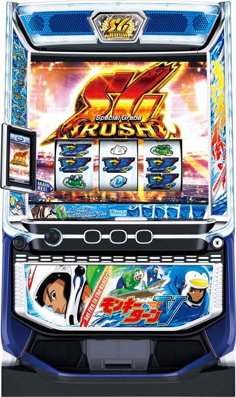

LモンキーターンV

[天井情報] 795G+α AT当選 リセット天井 495G+α AT当選(最大4周期) [リセット判別] ガックンあり [有利区間について] グランドスラム達成、または同一有利区間内+1500から+1600枚で有利切れる。 有利区間切れた後、青島vs波多野に突入。 上位ATのサインはAT中の履歴が10G か11Gの履歴になる。
狙い目
[リセット狙い&天井短縮狙い]
150Gから
※2周期目0ptからは厳しいかも
※青島vs波多野敗北後もリセ同様天井短縮
※上位AT後も天井短縮
[天井狙い]
0pt 450Gから
4周期 160pから
5周期 0pから
[有利区間切れ狙い]
AT終了時0から差枚+1300以上の台。
即やめ台
→1周期目優出まで
天井狙い
→350Gから
０から差枚+1500から+1600で有利区間が切れる。有利切れると青島vs波多野に突入。
※差枚プラスで上位AT突入した場合は有利切れ。
[周期狙い]
・1周期狙い(222p以内の優出濃厚)
ロゴなし 60pから優出まで
ロゴあり 80pから優出まで
・その他の周期狙い
450pから優出まで
[ヘルメット狙い]
・ロゴ+キラキラ
積極派 0Gから
慎重派 2周期目から
※実践上1周期当選少なめ？
・ロゴ+V 天国濃厚
AT当選まで
[ライバルヘルメット狙い]
・青島→AT当選まで
・モノクロ波多野→AT当選まで
・榎木ヘルメット
【優出期待度50%】
1周期目0〜優出モードまで
2、3周期目350pt〜優出モードまで
4周期目150pt〜当たるまで
5周期目〜当たるまで
・浜岡ヘルメット
【規定ポイント最大222】
2周期目100p〜優出モードまで
3周期目100p〜当たるまで
4、5周期目→当たるまで
・洞口ヘルメット
積極派 １周期～優出モードまで
慎重派 少しボーダー下げる
・蒲生ヘルメット
少しボーダー下げる
{kind=link}
[アイテム狙い]
ペンギンストックはAT当選まで
他のアイテムはボーダー下げる
やめ時
ヘルメット確認してやめ
参考元
設定判別ツールhttps://suroschool.jp/lmonkey.html
使用方法
基本情報
- メーカー: 山佐
- 機械割: 97.9% 〜 114.9%
- 導入開始日: 2023年12月04日（月）
- ゲーム性概要: 通常時は毎ゲーム激走ポイントを貯めて「優出モード」を目指すゲーム性で、特化ゾーン「激走チャージ」で一気にポイントを貯めることも可能だ。 CZは「超抜チャレンジ」と「グランドスラムチャレンジ」の2種類があり、前者は成功でAT突入、後者は成功＝グランドスラム達成が濃厚となる。 AT「SGラッシュ」は純増約2.5枚/G、14種類のシナリオで各セットの継続率を管理。AT中はレア役で上乗せ抽選がおこなわれるほか、新要素の「ぶっちぎりバトル」勝利でも上乗せなどの報酬を獲得可能。純増約4枚/Gの上位AT「青島SG」はループ率約83%（Vストック込み）で、青島が負けない限りATが継続する。


打ち方
打ち方・小役
打ち方：BAR狙い（小役狙い）
［最初に狙う絵柄］ 左リール上段付近にBARを狙うオーソドックスな打ち方。上段にボートがスベってきた場合のみ、中リールにボートを目押ししよう。それ以外は中＆右リールフリー打ちでOKだ。

［BAR下段停止］ 成立役：ハズレorリプレイor共通ペラor弱チャンス目

［角チェリー停止］ 成立役：弱チェリーor強チェリー

［ボート上段停止］ 成立役：ボートor強チャンス目

［レア役の停止形］

究極目はAT直撃以上！
青V狙い（小役狙い）
［最初に狙う絵柄］ 左リール上段付近に青Vを目押し。青Vがチェリーの代用になるため、取りこぼしはない。激走チャージ中のリプレイ判別などで楽しめる打ち方だ。

［V下段停止］ 成立役：ハズレorリプレイor共通ペラor弱チャンス目

［2連Vが中段＆下段停止］ 成立役：リプレイor弱チェリーor強チェリー

［ボート上段停止］ 成立役：ボートor強チャンス目

［2連Vが上段＆中段停止］ 成立役：究極目

変則押しはNG
通常時やAT中のナビ非発生は左1stでの消化を推奨。 変則押しをしてしまっても、次ゲームの究極目は有効。フリーズ抽選もおこなわれる。

変則押し（AT中専用）
AT中は中押し・逆押しで楽しむことも可能。中押しは第1停止で小役以上を判別しやすく、逆押しは第1停止でレア役が判別しやすくなっている。
【中押し・BAR狙い】 中リール上段付近にBARを目押し。基本的に左＆右リールはフリー打ちでOKだ。

［BAR中段停止］ 成立役：究極目

［BAR下段停止］ 成立役：ペラor弱チャンス目

［BAR上段停止］ 成立役：ボートor弱チェリーor強チェリーor強チャンス目

［リプレイ中段停止］ 成立役：リプレイ

［チェリー中段停止］ 成立役：ハズレ

【逆押し・青V狙い】 右リール枠上〜上段に下側の青Vを目押しする、初代モンキーの逆押しを踏襲した打ち方。逆ハサミで左リールはフリー打ち、ボートの可能性がある場合のみ中リールにボートを狙おう（BAR目安でOK）。

［青V上中段停止］ 成立役：ハズレorペラorリプレイ

［青V上段停止］ 成立役：弱チェリーor強チェリー

［リプレイ中段停止］ 成立役：リプレイorボートor弱チャンス目

［青V中下段停止］ 成立役：強チャンス目

解析情報通常時
小役関連
小役確率
| 役 | 確率 |
|---|---|
| ボート | 1/89.9 |
| 弱チェリー | 1/69.9 |
| 強チェリー | 1/569.9 |
| 弱チャンス目 | 1/297.9 |
| 強チャンス目 | 1/448.9 |
※レア役合算は1/30.5
リプレイフラグは通常リプレイ・フェクリプレイ・青V揃い（シングルorダブル）・ピンクV揃いの5種類がある。
激走チャージ＆超抜チャレンジ当選率
ライバルモードが蒲生なら、超抜チャレンジ当選率がアップする。
［ライバルモードが蒲生以外］ 激走チャレンジ・超抜チャレンジ当選率 通常中
| 役 | 激走チャージ | 超抜チャレンジ | トータル |
|---|---|---|---|
| ボート | 3.1% | 1.2% | 4.3% |
| 弱チェリー | 37.4% | 0.4% | 37.7% |
| 強チェリー | 69.9% | 30.1% | 100% |
| 弱チャンス目 | 43.9% | 6.3% | 50.2% |
| 強チャンス目 | 84.8% | 15.2% | 100% |
高確中
| 役 | 激走チャージ | 超抜チャレンジ | トータル |
|---|---|---|---|
| ボート | 40.0% | 10.2% | 50.2% |
| 弱チェリー | 64.3% | 3.1% | 67.5% |
| 強チェリー | 33.6% | 66.4% | 100% |
| 弱チャンス目 | 79.7% | 20.3% | 100% |
| 強チャンス目 | 59.4% | 40.6% | 100% |
［ライバルモードが蒲生］ 激走チャレンジ・超抜チャレンジ当選率 通常中
| 役 | 激走チャージ | 超抜チャレンジ | トータル |
|---|---|---|---|
| ボート | 2.8% | 10.2% | 13.0% |
| 弱チェリー | 36.3% | 3.1% | 39.5% |
| 強チェリー | ー | 100% | 100% |
| 弱チャンス目 | 35.2% | 25.0% | 60.2% |
| 強チャンス目 | 50.0% | 50.0% | 100% |
高確中
| 役 | 激走チャージ | 超抜チャレンジ | トータル |
|---|---|---|---|
| ボート | 33.4% | 25.0% | 58.4% |
| 弱チェリー | 58.1% | 12.5% | 70.6% |
| 強チェリー | ー | 100% | 100% |
| 弱チャンス目 | 50.0% | 50.0% | 100% |
| 強チャンス目 | ー | 100% | 100% |
内部状態関連
高確移行率
| 契機 | 移行率 |
|---|---|
| ボート | 50.0% |
| 優出モード終了時 | 50.0% |
| 激走チャージ終了時 | 50.0% |
| 超抜チャレンジ終了時 | 50.0% |
モード
通常モード概要
滞在している通常モードの種類で、周期抽選回数ごとのAT当選期待度および周期回数天井が変化。1周期目は平均80Gで規定ポイントに到達する。
通常モード解説
| モード | 詳細 | 周期天井（AT当選） |
|---|---|---|
| 通常A | 2周期目・5周期目がチャンス | 6周期 |
| 通常B | 2周期目がチャンス | 3周期 |
| 天国 | 1周期目で必ずAT当選 | 1周期 |
通常Bでは機械割100%以上になる。
通常モード別・周期抽選回数ごとのAT期待度分布
| 到達周期 | 通常A | 通常B | 天国 |
|---|---|---|---|
| 1周期目 | － | － | 天井 |
| 2周期目 | ◯ | ◯ | － |
| 3周期目 | △ | 天井 | － |
| 4周期目 | ▲ | － | － |
| 5周期目 | ◯ | － | － |
| 6周期目 | 天井 | － | － |
※期待度序列は△＜▲＜◯、優出モード移行＝1周期
ライバルモード概要
通常モードとは別軸で、ATのシナリオ優遇や周期抽選の期待度アップなど、様々な恩恵を受けることができるモード。各ライバルモードは突入したらAT当選まで継続する。
ライバルモード一覧
| モード | 恩恵 |
|---|---|
| モノクロ波多野 | 継続シナリオが 「最強のB2」or「艇王」 |
| 榎木 | 優出モード （周期抽選） の期待度が50%以上 ※優出モード時に本前兆書き換えを抽選 |
| 洞口 | 継続シナリオが「ギャンブラー」以上 ※艇界のヒロインを除く |
| 蒲生 | 強チェリー成立で超抜チャレンジ突入 |
| 浜岡 | 最大規定激走ポイント222pt |
| 青島 | AT当選で青島SG |
高設定ほど蒲生モードは移行しやすいため、結果的に超抜チャレンジの当選率が高い。榎木モード中は規定ポイント到達時の第3停止ボタンを離したタイミングで前兆の書き換えを抽選。 榎木、蒲生、浜岡の移行率には設定差がある。
設定変更後・AT終了時の移行モード
AT終了画面でレア役を引くと通常B以上濃厚。強レア役なら天国濃厚となる。
AT終了画面・レア役成立時のモード移行抽選特徴
| 役 | 移行先 |
|---|---|
| ボート | 通常B以上 |
| 弱チェリー | 通常B以上 |
| 弱チャンス目 | 通常B以上 |
| 強チェリー | 天国 |
| 強チャンス目 | 天国 |
※設定変更後1G目も共通
ライバルモードへのトータル移行率
| 設定 | 移行率 |
|---|---|
| 1 | 30.0% |
| 2 | 31.6% |
| 4 | 36.3% |
| 5 | 41.7% |
| 6 | 44.0% |
通常B滞在時の周期天井割合
通常Bは最大3周期でAT当選となるが、2周期目の選択割合が設定1でも65%と高い。
通常B滞在時・AT当選周期選択割合（設定1）
| 周期 | 割合 |
|---|---|
| 2周期目 | 65.0% |
| 3周期目（天井） | 35.0% |
前兆
前兆中の抽選内容
| 前兆 | 内容 |
|---|---|
| フェイク前兆 | 激走チャージや超抜チャレンジ抽選 |
| 本前兆 | ATのVストック抽選 |
［激走チャージ・超抜チャレンジ・AT直撃］ 前兆ゲーム数振り分け
| 前兆 | 激走チャージ | 超抜チャレンジ | AT直撃 |
|---|---|---|---|
| 5G | 25.0% | 6.3% | 6.3% |
| 6G | 50.0% | 18.8% | 12.5% |
| 7G | 25.0% | 50.0% | 50.0% |
| 8G | ー | 25.0% | 25.0% |
| 9G | ー | ー | 6.3% |
［規定ポイント到達時］前兆ゲーム数振り分け
| 前兆 | フェイク前兆 | 本前兆 |
|---|---|---|
| 13G | ー | 2.3% |
| 17G | ー | 2.3% |
| 30G | ー | 6.3% |
| 31G | ー | 6.3% |
| 32G | 100% | 48.4% |
| 33G | ー | 25.0% |
| 34G | ー | 6.3% |
| 36G | ー | 3.1% |
［激走チャージ終了後の即優出］前兆ゲーム数振り分け
| 前兆 | フェイク前兆 | 本前兆 |
|---|---|---|
| 16G | 92.2% | 52.3% |
| 17G | ー | 10.2% |
| 20G | 7.8% | 31.3% |
| 21G | ー | 6.3% |
激走ポイント（周期抽選）
激走ポイント概要
1G消化ごとに1pt加算されるポイントで、 3桁ゾロ目到達ごとに周期抽選発生（当選すればAT）のチャンス 。周期抽選の天井は666ptで、最大6周期（周期天井）到達でAT当選が確定する。 1周期目は必ず222pt以内に優出モードが発生。メーター周囲の色で期待度が示唆される。

周期抽選に選ばれる可能性があるポイント
| 項目 | ポイント |
|---|---|
| 優出モード移行に 期待できる激走ポイント | 111pt・222pt・333pt・ 444pt・555pt・666pt |
変化した激走ポイントのエフェクト別示唆
| エフェクト | 示唆 |
|---|---|
| 青 | 周期抽選のチャンス |
| 緑 | 周期抽選濃厚 |
| 赤 | 周期抽選＋AT当選のチャンス |
| 紫 | 周期抽選＋青島SG当選のチャンス |
激走ポイントの周期抽選分布
| 激走ポイント | 1周期目 | 2～5周期目 | 6周期目 |
|---|---|---|---|
| 111pt | ○ | ✕ | ✕ |
| 222pt | 天井 | ○ | ○ |
| 333pt | － | ✕ | ✕ |
| 444pt | － | ○ | 天井 （AT当選） |
| 555pt | － | ✕ | － |
| 666pt | － | 天井 | － |
※期待度序列は ✕ ＜◯、天井はあくまで周期抽選発生の天井（AT当選ではない）
周期抽選の法則
| パターン | 法則 |
|---|---|
| 当該周期が555pt以上だった場合 | 次回周期の規定激走ポイントが 222pt以下 |
| ライバルモードの浜岡時 | 次回周期の規定激走ポイントが 222pt以下 |
1周期目・2周期目のAT期待度は約40%あるので、2周期以内のAT当選期待度は約64%になる。
激走チャージ
激走チャージ概要
おもにレア役を契機に突入する激走ポイント特化ゾーン。滞在中のレア役は獲得ポイントが多いうえ、ATを有利に進めることができる「EXアイテム」獲得に期待できる。

激走チャージ性能
| 項目 | 恩恵 |
|---|---|
| 当選契機 | レア役 （超抜チャレンジ非当選時に抽選） |
| 平均確率 | 1/94 （設定1） |
| 継続ゲーム数 | 5G |
| 1回の加算激走ポイント | 10～200pt |
| その他 | 終了後は高確移行のチャンス |
EXアイテム一覧
| アイテム | 恩恵 |
|---|---|
| EXゲーム | ATゲーム数＋20G以上 |
| EXストック | Vストック獲得 |
| ペンギンストック | 青島SG確定 |
［EXゲーム］

［EXストック］

［ペンギンストック］

加算激走ポイント振り分け
| ポイント | ハズレ | リプレイ | ペラ |
|---|---|---|---|
| ＋10pt | 81.1% | ー | ー |
| ＋20pt | 7.3% | 53.5% | 38.7% |
| ＋30pt | 7.0% | 20.7% | 36.7% |
| ＋50pt | 4.5% | 25.0% | 23.8% |
| ＋100pt | 0.1% | 0.8% | 0.8% |
| ＋200pt | ー | ー | ー |
| ポイント | ボート／ 弱チェリー | 弱チャンス目 | 強チェリー／ 強チャンス目 |
| ＋10pt | ー | ー | ー |
| ＋20pt | ー | ー | ー |
| ＋30pt | ー | ー | ー |
| ＋50pt | 93.8% | ー | ー |
| ＋100pt | 5.5% | 93.8% | ー |
| ＋200pt | 0.8% | 6.3% | 100% |
レア役は＋50pt以上確定。
EXアイテム獲得率
レア役成立時は激走ポイント加算に加え、EXアイテム獲得も抽選。EXアイテムを持っている状態の機械割は100%を超える。
EXアイテム獲得時の振り分け
| EXアイテム | 振り分け | |
|---|---|---|
| EXゲーム | ＋20G | 59.8% |
| EXゲーム | ＋30G | 17.4% |
| EXゲーム | ＋50G | 1.9% |
| EXゲーム | ＋100G | 0.6% |
| EXストック | 19.5% | |
| ペンギンストック | 0.8% |
激走チャージ中・ロングフリーズ発生率
| 役 | 発生率 |
|---|---|
| 究極目 | 33.6% |
激走チャージ中の究極目成立時は、約34%でロングフリーズが発生。通常時よりも発生率がアップしている。
激走チャージ間天井 項目
| 条件 | ● 設定変更後81G＋α消化 ● AT終了後81G消化 ● 激走チャージ後131G消化 ● 上記いずれかを満たした後のレア役成立で激走チャージor超抜チャレンジに当 選 |
|---|---|
| その他 | ● 超抜チャレンジでは激走チャージ間天井ゲーム数はリセットされない |
激走チャージ間天井到達後のレア役成立で、激走チャージもしくは超抜チャレンジに当選。ただし、激走チャージや超抜チャレンジの本前兆中・優出モード中（フェイク・本前兆共通）は抽選がおこなわれない。
優出モード
優出モード概要
おもに3桁ゾロ目の激走ポイント時に突入する可能性があるAT当選の前兆で、エフェクトがアップするほど本前兆期待度がアップ。波多野優出・青島優出の2種類があり、後者は突入した時点でAT濃厚だ。 今回は 発生＝周期到達 となるため、 最大6回目の突入でAT当選が確定 する（6周期で天井）。 終了後は高確へ移行する可能性がある。

［フェイク前兆中の抽選］ フェイク前兆の場合は滞在中のレア役でAT直撃は抽選されず、激走チャージと超抜チャレンジのみを抽選。ただし、究極目のみAT直撃となる。
［波多野優出］ デフォルトパターン。

［青島優出］ AT当選時の一部で発生するAT確定の優出モード。青島モード滞在中であれば青島SGへ、青島モード以外なら通常のSGラッシュへ突入する。青島優出の突入比率は青島モード：非青島モードで 1：1 なので、青島優出突入時の青島SG期待度は約50%となる（青島モード以外でも、青島SGの可能性はある）。

※青島優出中に天井を迎えるもしくは、究極目を引いた場合は青島SG確定にはならない
AT終了時の即優出
AT終了後、即優出モード突入でAT濃厚。高設定ほど発生しやすい。設定変更後やAT終了後、すぐに前兆が発生するケースも即優出と同様で、激アツかつ高設定ほど発生しやすい。
超抜チャレンジ（CZ）
超抜チャレンジ概要
シリーズ伝統のCZで、今回もレア役時の抽選を契機に移行。成功すればAT突入、失敗してもグランドスラムチャレンジに発展する可能性がある。

超抜チャレンジ（CZ）性能
| 項目 | 内容 |
|---|---|
| 当選契機 | レア役 |
| 継続ゲーム数 | 10G |
| 成功期待度 | 約50% |
| 消化中の抽選 | ペラ・レア役でATを抽選 |
| その他 | 失敗時は抽選でグランドスラムチャレンジへ突入 ※グランドスラムチャレンジ非当選でも高確移行のチャンス |
AT当選率
| 役 | 当選率 |
|---|---|
| ペラ | 9.4% |
| ボート | 33.6% |
| 弱チェリー | 33.6% |
| 強チェリー | 100% |
| 弱チャンス目 | 50.0% |
| 強チャンス目 | 100% |
超抜チャレンジにはペラorレア役の天井回数が存在。一度の超抜チャレンジでペラorレア役が9回成立すると天井到達となり、成功となる。 ちなみに、赤玉が2回出現した場合も成功だ。
グランドスラムチャレンジ
グランドスラムチャレンジ概要
超抜チャレンジ失敗時の一部で突入するプレミアムCZ。失敗してもAT当選（1セット目は勝利確定）、 成功すれば波多野フリーズor青島SPフリーズが確定 する。


グランドスラムチャレンジ性能
| 項目 | 内容 |
|---|---|
| 当選契機 | 超抜チャレンジ失敗時の1.2% |
| 継続ゲーム数 | 10G |
| 成功期待度 | 約60% |
| 消化中の抽選 | ペラ・レア役で成功抽選（成功でロングフリーズ） |
| その他 | 失敗時してもAT当選＋Vストック1個獲得 |
※ロングフリーズ…波多野フリーズor青島SPフリーズ
成功率（フリーズ発生）
| 役 | 成功率 |
|---|---|
| ペラ | 9.4% |
| ボート | 100% |
| 弱チェリー | 100% |
| 強チェリー | 100% |
| 弱チャンス目 | 100% |
| 強チャンス目 | 100% |
レア役成立で波多野フリーズor青島SPフリーズ確定！
直撃抽選
AT直撃当選率
規定ポイントに到達したゲームで引いたレア役でも、直撃は抽選される。
演出動画
ロングフリーズ
中段チェリーの一部で発生。艇王シナリオ（8セットクリア確定）のATへ突入する。
青島SPフリーズ
中段チェリーの一部で発生。青島SG直行＋Vストックを複数獲得できるので、ロング継続に期待できる。
フリーズ
波多野フリーズ
AT＋艇王シナリオが確定するため、AT8セットクリア（エンディング到達）確定。エンディングが確定するので、AT終了後も青島SGをかけたバトルへ突入する。

波多野フリーズ性能
| 項目 | 内容 |
|---|---|
| 発生契機 | 究極目の一部、グランドスラムチャレンジ成功の一部 |
| 恩恵 | 艇王シナリオ確定（8戦勝利） |
青島SPフリーズ
青島SG（上位AT）＋大量ストックに期待できる最強のフリーズだ。

青島SPフリーズ性能
| 項目 | 内容 |
|---|---|
| 発生契機 | 究極目の一部、グランドスラムチャレンジ成功の一部、 青島SG継続時の一部など |
| 恩恵 | 青島SG＋Vストック8個以上 |
特殊条件でのフリーズ抽選

究極目成立でフリーズ発生濃厚となるタイミング
| No. | タイミング |
|---|---|
| 1 | 設定変更後の特殊状態中 （激走カウンターが表示されるまで。最低2G継続） |
| 2 | AT終了後、ヘルメットが変化するゲーム |
特殊状態中の究極目は青島SPフリーズ濃厚。ヘルメット変化ゲームでの究極目はライバルモードが青島であれば青島SPフリーズ、その他のモードなら波多野フリーズが発生する。
解析情報ボーナス時
波多野SG（SGラッシュ）
波多野SG概要
セットごとの継続率がシナリオで異なる、おなじみのシナリオ管理型AT。周回パート終了後にSGレース（継続ジャッジ）に突入して、勝利すれば次セットへ移行する。 消化中はレア役でゲーム数上乗せ、ぶっちぎりバトル、全速モードが抽選される。 最終ゲームの第3停止時に継続率に応じた継続の成否を抽選、強チャンス目は書き換え期待度約50%だ。

波多野SG（SGラッシュ）性能
| 項目 | 内容 |
|---|---|
| 当選契機 | 周期抽選、CZ成功など |
| 継続ゲーム数 | 31G＋α＋SGレース（9G）/セット |
| 純増 | 約2.5枚/G |
| 周回パート中の抽選 | ぶっちぎりバトル高確移行、ゲーム数上乗せ、 ぶっちぎりバトル、全速モード |
| SGレース中の抽選 | 勝利書き換え（勝利時はバカンスモード抽選） |
| その他 | V揃いでVストック（継続確定） |
波多野SG・成立役ごとの抽選
| 役 | ゲーム数 上乗せ | 全速モード | ぶっちぎり バトル | 高確移行 |
|---|---|---|---|---|
| ボート | ✕ | － | ✕ | ○ |
| 弱チェリー | ○ | － | ○ | － |
| 強チェリー | ★ | ✕ | ★ | － |
| 弱チャンス目 | △ | △ | － | － |
| 強チャンス目 | ○ | ○ | － | － |
| 究極目 | ★ | － | － | － |
※期待度序列は ✕ ＜△＜◯＜★（濃厚）、ボートでの上乗せは＋100G以上 ※SGレース中の強チェリーは書き換え確定
［周回パート］

周回中はおもに上乗せや特化ゾーンを抽選する。
［SGレース］

レースでは継続率を参照して勝敗をジャッジ 。レア役時は勝利書き換えが抽選される。
［V揃い］ 今回もV揃いはセット継続ストック、ダブルラインで揃えばセット継続に加え、＋100〜300Gの上乗せが確定する。

継続シナリオ一覧
| シナリオ | 1 | 2 | 3 | 4 | 5 | 6 | 7 | 8 |
|---|---|---|---|---|---|---|---|---|
| 駆け出し | 10% | 80% | 10% | 80% | 10% | 80% | 50% | 継続 |
| 遅咲き | 10% | 25% | 50% | 66% | 80% | 継続 | 継続 | 継続 |
| 関東ガマシ | 50% | 25% | 66% | 10% | 66% | 80% | 50% | 継続 |
| ダービーキング | 80% | 10% | 80% | 10% | 80% | 継続 | 50% | 継続 |
| ツケマイ巧者 | 66% | 80% | 10% | 66% | 10% | 80% | 50% | 継続 |
| ギャンブラー | 継続 | 10% | 継続 | 10% | 継続 | 10% | 継続 | 継続 |
| 紅一点 | 66% | 80% | 継続 | 10% | 66% | 10% | 50% | 継続 |
| 洞口スペシャル | 80% | 80% | 66% | 66% | 50% | 10% | 50% | 継続 |
| 艇界のヒロイン | 50% | 50% | 50% | 50% | 50% | 50% | 50% | 継続 |
| 一般戦の鬼 | 66% | 66% | 66% | 66% | 66% | 66% | 50% | 継続 |
| 愛知の巨人 | 80% | 80% | 80% | 80% | 80% | 80% | 50% | 継続 |
| 最強のB2 | 2% | 継続 | 継続 | 継続 | 継続 | 継続 | 継続 | 継続 |
| 逆襲の艇王 | 継続 | 2% | 継続 | 継続 | 継続 | 継続 | 継続 | 継続 |
| 艇王 | 継続 | 継続 | 継続 | 継続 | 継続 | 継続 | 継続 | 継続 |
シナリオ振り分け
| シナリオ | ライバルモードが 洞口以外 | ライバルモードが 洞口 |
|---|---|---|
| 駆け出し | 13.9% | ー |
| 遅咲き | 11.1% | ー |
| 関東ガマシ | 13.2% | ー |
| ダービーキング | 12.4% | ー |
| ツケマイ巧者 | 11.7% | ー |
| ギャンブラー | 5.2% | 18.8% |
| 紅一点 | 5.5% | 18.8% |
| 洞口スペシャル | 5.2% | 25.0% |
| 艇界のヒロイン | 10.5% | ー |
| 一般戦の鬼 | 5.2% | 18.8% |
| 愛知の巨人 | 3.5% | 14.1% |
| 最強のB2 | 1.4% | 2.1% |
| 逆襲の艇王 | 0.6% | 0.9% |
| 艇王 | 0.6% | 1.6% |
AT突入時（準備中の最終ゲーム）の第3停止ボタンを離したタイミングでシナリオを抽選。シナリオ選択率は全設定共通、AT当選契機不問で選択率はつねに一定。継続（継続率100%）のセットでは、継続ストックを使用しない。
液晶上部でも継続率を推測可能。AT中はサブ液晶からこのシナリオ表を見ることができる。

液晶上部アイコン色での継続率示唆
示唆
ラウンド1の初期色が青なら、「ギャンブラー」以上 （艇界のヒロインを除く）
ラウンド3以降で初期色が青の場合、内部的には赤以上
AT準備中の抽選
AT準備中（4G＋α）はレア役でEXアイテム獲得やATゲーム数上乗せを抽選する。

ゲーム数上乗せ当選率
| 役 | 当選率 |
|---|---|
| ボート | 25.0% |
| 弱チェリー | 50.0% |
| 強チェリー | 100% |
| 弱チャンス目 | 50.0% |
| 強チャンス目 | 100% |
ゲーム数上乗せ当選時のゲーム数振り分け
| 上乗せ | ボート | 弱チェリー | 強チェリー | 弱 チャンス目 | 強 チャンス目 |
|---|---|---|---|---|---|
| ＋10G | － | 93.8% | － | － | － |
| ＋30G | － | 4.7% | － | 93.8% | 75.0% |
| ＋50G | 87.5% | 0.8% | 93.8% | 4.7% | 21.9% |
| ＋100G | 9.4% | 0.8% | 4.7% | 0.8% | 2.3% |
| ＋300G | 3.1% | － | 1.6% | 0.8% | 0.8% |
上乗せ以上トータル当選率
| 役 | 通常 | バトル高確中 |
|---|---|---|
| 下記以外 | ー | 6.5% |
| ボート | 0.4% | 25.0% |
| 弱チェリー | 43.2% | 59.3% |
| 強チェリー | 100% | 100% |
| 弱チャンス目 | 29.6% | 53.5% |
| 強チャンス目 | 49.3% | 81.7% |
ゲーム数上乗せ当選率
| 役 | 通常 | バトル高確中 |
|---|---|---|
| ボート | 0.1% | 0.2% |
| 弱チェリー | 19.8% | 19.8% |
| 強チェリー | 100% | 100% |
| 弱チャンス目 | 17.3% | 33.9% |
| 強チャンス目 | 32.5% | 62.3% |
| 究極目 | 100% | 100% |
※究極目は＋300G確定
全速モード当選率
| 役 | 通常 | バトル高確中 |
|---|---|---|
| 強チェリー | 1.6% | 3.1% |
| 弱チャンス目 | 14.9% | 29.7% |
| 強チャンス目 | 24.9% | 51.6% |
※強チェリー契機の全速モードは20G継続
ぶっちぎりバトル当選率
| 役 | 通常 | バトル高確中 |
|---|---|---|
| 下記以外 | ー | 6.5% |
| ボート | 0.3% | 24.9% |
| 弱チェリー | 29.1% | 49.2% |
| 強チェリー | 98.2% | 96.5% |
※強チェリーはバトル非当選で上乗せ100G以上or全速モード20G
バトル高確移行率
ぶっちぎりバトル高確はボート成立時に抽選。 バトル高確中のまま周回が終了した場合、ATが継続すれば次セットはバトル高確からスタート。残り高確ゲーム数が9G以下の場合、10Gに書き換えられる。
ぶっちぎりバトル高確移行率
| 役 | 移行率 |
|---|---|
| ボート | 32.9% |
ぶっちぎりバトル高確ゲーム数振り分け
| ゲーム数 | 振り分け |
|---|---|
| 12G | 62.5% |
| 15G | 25.0% |
| 20G | 10.9% |
| 30G | 1.6% |
グランドスラム後の継続率
| モード | 継続率 |
|---|---|
| A | 50.0% |
| B | 66.4% |
| C | 80.1% |
| D | 90.2% |
バカンスモード当選率
内部的に勝利確定後のレア役で、バカンスモードへの移行を抽選する。強チェリーはバカンスモード確定だ。
勝利確定後・バカンスモード当選率
| 役 | 当選率 |
|---|---|
| ボート | 6.3% |
| 弱チェリー | 6.3% |
| 強チェリー | 100% |
| 弱チャンス目 | 25.0% |
| 強チャンス目 | 50.0% |
賞金王決定戦（8セット目）のゲーム数上乗せ当選率
8セット目のレース中は、レア役でゲーム数上乗せを抽選。当選時は9セット目の後乗せで告知される。
上乗せゲーム数振り分け
| 上乗せ | ボート | 弱 チェリー | 強 チェリー | 弱 チャンス目 | 強 チャンス目 |
|---|---|---|---|---|---|
| ＋10G | ー | 93.8% | ー | ー | ー |
| ＋30G | ー | 4.7% | ー | 93.8% | 75.0% |
| ＋50G | 87.5% | 0.8% | 93.8% | 4.7% | 21.9% |
| ＋100G | 9.4% | 0.8% | 4.7% | 0.8% | 2.3% |
| ＋300G | 3.1% | ー | 1.6% | 0.8% | 0.8% |
押し順ベルの保証回数

AT準備中開始から終了画面までの間で、押し順ベル回数が17回以下だった場合はSGレースに敗北しても必ず復活する（保証があるのは1セット目のみ）。
フルナビの獲得条件

フルナビ権利獲得条件
| 条件 | 内容 |
|---|---|
| 1 | 左押しナビ時を除き、第1停止のみナビで1枚ペラ獲得時は次回の押し順ベルがフルナビになる |
| 2 | ハズレ目（1枚役取得）の53.6%でフルナビ権利をストック |
SGレース中やバカンスモード中も、条件を満たせば有効だ。
ぶっちぎりバトル
ぶっちぎりバトル概要
レア役（おもにチェリー）契機で突入する自力突破型のCZ。勝利後は1Gのぶっちぎりチャンスで報酬が告知される。報酬獲得後は敗北するまでぶっちぎりバトルが継続する「連旋」に突入する可能性もある。

ぶっちぎりバトル性能
| 項目 | 内容 |
|---|---|
| 当選契機 | レア役（主にチェリー）、高確中は全役で抽選 |
| 継続ゲーム数 | 2G（逆転時は3G） |
| 消化中の抽選 | 全役で勝利抽選 （ハズレ＜ペラ・リプレイ＜レア役） |
| 平均勝利期待度 | 約55% |
| その他 | 勝利後はぶっちぎりチャンスで報酬告知、 勝利時の一部で連旋に突入 |
ぶっちぎりバトル中のV揃い恩恵
| 揃ったライン | 恩恵 |
|---|---|
| シングル | 勝利確定＋継続ストック |
| ダブル | 勝利確定＋恩恵昇格＋継続ストック |
対戦相手の勝利時恩恵＆期待度
| 対戦相手 | 勝利時の恩恵 | 期待度 |
|---|---|---|
| 榎木 | ゲーム数上乗せより上の報酬 | 低 |
| 洞口 | ＋30G以上 | 中 |
| 蒲生 | ほぼゲーム数上乗せ | 中 |
| 浜岡 | ほぼゲーム数上乗せ | 高 |
| 青島 | 上位報酬の期待大 | 確定 |
※浜岡は小役2連続入賞で勝利確定
ぶっちぎりチャンスの獲得アイコン（恩恵）
| アイコン | 恩恵 |
|---|---|
| ＋G | ＋20or30or50G |
| 銀のV | Vストック1個 |
| 全速モード | 全速モードor究極全速モード |
| 金のV | Vストック2個 |
| 見せてやる！ | 究極Vフリーズ（＋100～500G） ※ループ抽選あり |
［対戦相手に注目］ 対戦相手に注目。上画像のように対戦相手表示画面がぶれている特殊画面なら勝てば連旋確定だ。

［ぶっちぎりチャンス］ 1G間の報酬告知。レア役を引けばゲーム数上乗せより豪華な報酬獲得が確定する。

連旋
ぶっちぎりバトル勝利後の一部（約25%）で突入する、 ぶっちぎりバトルが連続 する状態。負けるまでぶっちぎりバトルが継続する。 紫エフェクトの裏連旋なら初回勝利確定に加え、以降は約80%でループする。 連旋1回目は榎木が出現しない。
連旋・裏連旋の振り分け
| 対戦相手 | 連旋 | 裏連旋 |
|---|---|---|
| 榎木 | 87.5% | 12.5% |
| 洞口 | 96.9% | 3.1% |
| 蒲生 | 96.9% | 3.1% |
| 浜岡 | 96.9% | 3.1% |
| 青島 | 87.5% | 12.5% |
| ミニ洞口 | 87.5% | 12.5% |
連旋1回目の対戦相手振り分け
| 対戦相手 | 振り分け |
|---|---|
| 榎木 | ー |
| 洞口 | 24.2% |
| 蒲生 | 37.5% |
| 浜岡 | 37.5% |
| 青島 | 0.7% |
| ミニ洞口 | 0.07% |
［連旋］

［裏連旋］

対戦相手別・トータル勝利期待度
| 対戦相手 | 通常／連旋 | 裏連旋 |
|---|---|---|
| 榎木 | 30.0% | 70.4% |
| 洞口 | 50.0% | 75.3% |
| 蒲生 | 66.0% | 85.0% |
| 浜岡 | 80.0% | 100% |
| 青島 | 100% | 100% |
| ミニ洞口 | 100% | 100% |
バトル開始時・勝利当選率
| 対戦相手 | 通常／連旋中 | 裏連旋中 |
|---|---|---|
| 榎木 | 3.9% | 59.4% |
| 洞口 | 4.3% | 52.7% |
| 蒲生 | 5.5% | 58.2% |
| 浜岡 | 5.5% | 100% |
| 青島 | 100% | 100% |
| ミニ洞口 | 100% | 100% |
バトル中の成立役別勝利当選率
| 役 | 榎木 | 洞口 | 蒲生 | 浜岡 | 青島 |
|---|---|---|---|---|---|
| ハズレ | 1.2% | 7.0% | 10.5% | 11.7% | 100% |
| ペラ | 15.6% | 32.0% | 48.4% | 53.1% | 100% |
| リプレイ | 15.6% | 32.4% | 47.8% | 51.4% | 100% |
| レア役 | 100% | 100% | 100% | 100% | 100% |
| V揃い | 100% | 100% | 100% | 100% | 100% |
※リプレイの期待度はフェイクリプレイを含んだ数値 ※浜岡は小役2連で勝利確定
レア役は勝利が確定するだけでなく、報酬の昇格も抽選される。
［勝利濃厚出目］ ぶっちぎりバトルではフェイクリプレイ成立=勝利となるため、上記のフェイクリプレイ確定目が出れば勝利となる。

見せてやる！ループ
毎ゲーム、究極Vフリーズが発生する激アツ状態。ループ率は0%、25%、50%、75%の4種類が存在する。

対戦相手振り分け
| 対戦相手 | 振り分け |
|---|---|
| 榎木 | 30.21% |
| 洞口 | 24.73% |
| 蒲生 | 25.81% |
| 浜岡 | 17.49% |
| 青島 | 1.61% |
| ミニ洞口 | 0.15% |
［ミニ洞口］ ミニ洞口に勝利すれば見せてやる！ or 金Vストック（ストック2個）濃厚だ。

見せてやる！発生時の上乗せゲーム数振り分け
| 上乗せ | 非レア役 | ボート 弱チェリー | 弱チャンス目 | 強チャンス目 強チェリー |
|---|---|---|---|---|
| ＋100G | 50.0% | ー | ー | ー |
| ＋150G | 31.3% | ー | ー | ー |
| ＋200G | 16.4% | ー | ー | ー |
| ＋300G | 1.6% | 75.0% | ー | ー |
| ＋500G | 0.8% | 25.0% | 100% | 100% |
※見せてやる！ループ時はループに漏れるまで上記抽選をおこなう
勝利時の恩恵割合
ぶっちぎりバトル勝利時の恩恵はA～Eの恩恵レベルによって管理。A～Cの恩恵自体は共通だが、上位レベルほどゲーム数上乗せ選択時の上乗せゲーム数が優遇される。 初期レベルは対戦相手に応じて抽選され、ぶっちぎりバトル中のレア役で昇格を抽選、ぶっちぎりチャンスでレア役を引けば必ず昇格＋全速モード以上が確定する。
対戦相手別・恩恵割合
| 恩恵 | 榎木 | 洞口 | 蒲生 |
|---|---|---|---|
| ゲーム数上乗せ | ー | 60.0% | 80.1% |
| 青Vストック | 59.3% | 22.9% | 12.4% |
| 全速モード | 34.1% | 12.6% | 5.4% |
| 金Vストック | 3.6% | 2.6% | 1.3% |
| 見せてやる！ | 3.0% | 1.9% | 0.9% |
| 恩恵 | 浜岡 | 青島 | ミニ洞口 |
| ゲーム数上乗せ | 94.4% | ー | ー |
| 青Vストック | 2.1% | 56.8% | ー |
| 全速モード | 1.7% | ー | ー |
| 金Vストック | 1.2% | 26.2% | 47.5% |
| 見せてやる！ | 0.6% | 17.0% | 52.5% |
※バトル中のレア役による昇格を含む、トータルの割合
恩恵レベルごとの恩恵
| 恩恵レベル | 恩恵 |
|---|---|
| A～C | 全恩恵の可能性あり |
| D | 金Vストックor見せてやる！ |
| E | 見せてやる！ |
初期恩恵レベル振り分け
| 恩恵レベル | 榎木 | 洞口 | 蒲生 |
|---|---|---|---|
| A | ー | ー | 87.5% |
| B | 96.9% | 98.4% | 10.9% |
| C | 2.3% | 1.2% | 1.2% |
| D | 0.8% | 0.4% | 0.4% |
| 恩恵レベル | 浜岡 | 青島 | ミニ洞口 |
| A | 93.8% | ー | ー |
| B | 5.5% | ー | ー |
| C | 0.4% | 95.7% | ー |
| D | 0.4% | 4.3% | 100% |
［ぶっちぎりバトル中］恩恵レベル昇格率
| 役 | 1段階アップ | 2段階アップ | トータル |
|---|---|---|---|
| ボート | 11.7% | 0.8% | 12.5% |
| 弱チェリー | 11.7% | 0.8% | 12.5% |
| 強チェリー | ー | 100% | 100% |
| 弱チャンス目 | 23.4% | 1.6% | 25.0% |
| 強チャンス目 | 75.0% | 25.0% | 100% |
［ぶっちぎりチャンス中］恩恵レベル昇格率
| 役 | 1段階アップ | 2段階アップ | 3段階アップ | トータル |
|---|---|---|---|---|
| ボート | 75.0% | 25.0% | ー | 100% |
| 弱チェリー | 75.0% | 25.0% | ー | 100% |
| 強チェリー | ー | ー | 100% | 100% |
| 弱チャンス目 | ー | 93.8% | 6.3% | 100% |
| 強チャンス目 | ー | 75.0% | 25.0% | 100% |
［恩恵レベルA～C］ ぶっちぎりチャンス中に非レア役時の恩恵振り分け
| 恩恵 | 榎木 | 洞口 | 蒲生 |
|---|---|---|---|
| ゲーム数上乗せ | ー | 62.9% | 83.2% |
| 青Vストック | 62.5% | 23.4% | 11.7% |
| 全速モード | 35.9% | 12.5% | 4.3% |
| 金Vストック | 1.2% | 0.8% | 0.4% |
| 見せてやる！ | 0.4% | 0.4% | 0.4% |
| 恩恵 | 浜岡 | 青島 | ミニ洞口 |
| ゲーム数上乗せ | 98.0% | ー | ー |
| 青Vストック | 0.8% | 62.5% | ー |
| 全速モード | 0.4% | ー | ー |
| 金Vストック | 0.4% | 25.0% | ー |
| 見せてやる！ | 0.4% | 12.5% | ー |
［恩恵レベルA～C］ ぶっちぎりチャンス中にレア役時の恩恵振り分け
| 恩恵 | 榎木 | 洞口 | 蒲生 |
|---|---|---|---|
| ゲーム数上乗せ | ー | ー | ー |
| 青Vストック | 25.0% | 37.5% | 43.8% |
| 全速モード | 25.0% | 37.5% | 43.8% |
| 金Vストック | 37.5% | 18.8% | 9.4% |
| 見せてやる！ | 12.5% | 6.3% | 3.1% |
| 恩恵 | 浜岡 | 青島 | ミニ洞口 |
| ゲーム数上乗せ | ー | ー | ー |
| 青Vストック | 46.9% | ー | ー |
| 全速モード | 46.9% | ー | ー |
| 金Vストック | 4.7% | ー | ー |
| 見せてやる！ | 1.6% | ー | ー |
［恩恵レベルD］恩恵振り分け（成立役不問）
| 恩恵 | 榎木 | 洞口 | 蒲生 |
|---|---|---|---|
| ゲーム数上乗せ | ー | ー | ー |
| 青Vストック | ー | ー | ー |
| 全速モード | ー | ー | ー |
| 金Vストック | 50.0% | 62.5% | 75.0% |
| 見せてやる！ | 50.0% | 37.5% | 25.0% |
| 恩恵 | 浜岡 | 青島 | ミニ洞口 |
| ゲーム数上乗せ | ー | ー | ー |
| 青Vストック | ー | ー | ー |
| 全速モード | ー | ー | ー |
| 金Vストック | 87.5% | 50.0% | 50.0% |
| 見せてやる！ | 12.5% | 50.0% | 50.0% |
［恩恵レベルE］恩恵振り分け（成立役不問）
| 恩恵 | 榎木 | 洞口 | 蒲生 |
|---|---|---|---|
| ゲーム数上乗せ | ー | ー | ー |
| 青Vストック | ー | ー | ー |
| 全速モード | ー | ー | ー |
| 金Vストック | ー | ー | ー |
| 見せてやる！ | 100% | 100% | 100% |
| 恩恵 | 浜岡 | 青島 | ミニ洞口 |
| ゲーム数上乗せ | ー | ー | ー |
| 青Vストック | ー | ー | ー |
| 全速モード | ー | ー | ー |
| 金Vストック | ー | ー | ー |
| 見せてやる！ | 100% | 100% | 100% |
上乗せ選択時の上乗せゲーム数振り分け
| 上乗せ | レベルA | レベルB | レベルC |
|---|---|---|---|
| ＋20G | 96.9% | ー | ー |
| ＋30G | 2.3% | 96.9% | ー |
| ＋50G | 0.8% | 3.1% | 100% |
恩恵レベルD（金Vストック）以上確定パターン
| タイミング | パターン |
|---|---|
| ぶっちぎり バトル中 | 榎木or洞口で強チェリー成立 |
| ぶっちぎり バトル中 | 青島で強チェリーor強チャンス目成立 |
| ぶっちぎり チャンス中 | 榎木or洞口で強チェリーor（弱・強）チャンス目成立 |
| ぶっちぎり チャンス中 | 蒲生or浜岡で強チェリー成立 |
| ぶっちぎり チャンス中 | 青島でレア役成立 |
全速モード
全速モード概要
シリーズ伝統のゲーム数上乗せ特化ゾーン。消化中はペラやレア役でゲーム数上乗せのチャンスだ。

全速モード性能
| 項目 | 内容 |
|---|---|
| 当選契機 | 強チェリー、チャンス目、 ぶっちぎりバトル勝利時の一部 |
| 継続ゲーム数 | 10or20G （前兆中に当選した場合は30G以上のケースあり） |
| 消化中の抽選 | ペラ・レア役でゲーム数上乗せ抽選 |
| 平均上乗せゲーム数 | 約50G |
| 救済要素 | 全速モード中の上乗せが0Gだった場合、 救済として＋100Gを獲得 |
ゲーム数上乗せ当選率
| 役 | 当選率 |
|---|---|
| ボート | 50.0% |
| 弱チェリー | 50.0% |
| 強チェリー | 100% |
| 弱チャンス目 | 100% |
| 強チャンス目 | 100% |
ゲーム数上乗せ当選時のゲーム数振り分け
| 上乗せ | ボート | 弱チェリー | 強チェリー | 弱 チャンス目 | 強 チャンス目 |
|---|---|---|---|---|---|
| ＋30G | － | 87.5% | － | 75.0% | － |
| ＋50G | 50.0% | 9.4% | 75.0% | 20.3% | 87.5% |
| ＋100G | 43.8% | 1.6% | 12.5% | 3.1% | 9.4% |
| ＋200G | － | 0.8% | 6.3% | 1.2% | － |
| ＋300G | 6.3% | 0.8% | 6.3% | 0.4% | 3.1% |
上記以外でもダブルV揃いが+200〜300Gとなるといった特徴がある。
ダブルV揃い・上乗せゲーム数振り分け
| 上乗せ | 振り分け |
|---|---|
| ＋200G | 87.5% |
| ＋300G | 12.5% |
全速モード中は狙えカットインが発生した時点でダブル揃い濃厚！
究極全速モード
究極全速モード概要
究極Vフリーズ（上乗せ100G以上）が高確率で発生するプレミアム特化ゾーン。消化中はペラの約1/2で＋100G以上、レア役は＋100G以上と超強力だ。

究極全速モード性能
| 項目 | 内容 |
|---|---|
| 当選契機 | 全速モード突入時の0.8% |
| 継続ゲーム数 | 10or20G （前兆中に当選した場合は30G以上になる場合もある） |
| 消化中の抽選 | ペラ成立時の約50%で＋100G以上、 レア役成立時は＋100G以上確定 |
| 平均上乗せゲーム数 | 約500G |
V揃い
究極全速モード中はVを狙えカットインが発生した時点でダブルV揃い（継続＋上乗せ300G）が確定する。

上乗せゲーム数割合
| 上乗せ | ペラ | ボート | 弱チェリー |
|---|---|---|---|
| ＋30G | 50.0% | ー | ー |
| ＋100G | 46.9% | 75.0% | 75.0% |
| ＋200G | 1.6% | ー | 18.8% |
| ＋300G | 1.6% | 25.0% | 6.3% |
| 上乗せ | 強チェリー | 弱チャンス目 | 強チャンス目 |
| ＋30G | ー | ー | ー |
| ＋100G | ー | ー | ー |
| ＋200G | ー | 50.0% | ー |
| ＋300G | 100% | 50.0% | 100% |
バカンスモード
バカンスモード概要
AT継続時（SGレース勝利）の一部で突入する30G間の上乗せ高確状態。勝利が確定している状態のSGレース中にレア役を引けば突入のチャンスだ。 終了後は周回パートへ移行する。

バカンスモードの特徴
| 項目 | 内容 |
|---|---|
| 突入契機 | SGレース勝利時の一部 |
| 継続ゲーム数 | 30G |
| 消化中の抽選 | ボート・弱チャンス目は約50%で上乗せ、 弱&強チェリー・強チャンス目は上乗せ確定 |
ゲーム数上乗せ当選率
| 役 | 当選率 |
|---|---|
| ボート | 50.0% |
| 弱チェリー | 100% |
| 強チェリー | 100% |
| 弱チャンス目 | 50.0% |
| 強チャンス目 | 100% |
ゲーム数上乗せ当選時のゲーム数振り分け
| 上乗せ | ボート | 弱チェリー | 強チェリー | 弱 チャンス目 | 強 チャンス目 |
|---|---|---|---|---|---|
| ＋10G | － | 75.0% | － | － | － |
| ＋30G | － | 21.9% | － | 75.0% | 75.0% |
| ＋50G | 93.8% | 2.3% | 75.0% | 18.8% | 18.8% |
| ＋100G | 4.7% | 0.4% | 23.4% | 5.5% | 5.5% |
| ＋300G | 1.6% | 0.4% | 1.6% | 0.8% | 0.8% |
青島SG（上位AT）
青島SG概要
純増が約4.0枚/Gと多いうえ、継続率が75%固定（Vストック当選込みだと約83%）になる上位AT。 後半9G間のSGレースは青島VS波多野固定になる。 継続時（SGレース勝利）の一部で青島SPフリーズが発生することもある。 基本的にVストックなし時かつ差枚がプラスの状態であれば、毎ゲーム有利区間を切ってからスタートする。

青島SG性能
| 項目 | 内容 |
|---|---|
| 当選契機 | AT当選時の一部、青島優出など |
| 継続ゲーム数 | 31or51or101G＋α ＋SGレース（9G）/セット |
| 純増 | 約4.0枚/G |
| 継続率 | 約75% （Vストック込みで約83%） |
| 周回パート中の抽選 | ゲーム数上乗せ、青島超抜チャレンジ、 青島全速モード、女子王座決定戦 |
| SGレース中の抽選 | 勝利書き換え（勝利時は温泉モード抽選） |
| その他 | V揃いでVストック（継続確定）、 継続時の一部で青島SPフリーズ発生 |
青島SG・成立役ごとの抽選
| 役 | ゲーム数 上乗せ | 青島超抜 チャレンジ | 青島 全速モード | 女子王座 決定戦 |
|---|---|---|---|---|
| ボート | ✕ | ○ | － | － |
| 弱チェリー | ○ | ○ | － | － |
| 強チェリー | ★ | ★ | ✕ | ✕ |
| 弱チャンス目 | ○ | － | ○ | ✕ |
| 強チャンス目 | ○ | － | ○ | ○ |
| 究極目 | ★ | － | － | － |
※期待度序列は ✕ ＜△＜◯＜★（濃厚） ※SGレース中の強チェリーは書き換え確定
［SGレース：青島VS波多野］

青島超抜チャレンジ
青島SG中のボート・チェリー時の抽選を契機に突入するCZで、ゲーム性は通常時の超抜チャレンジと類似。ただし、ペラやレア役だけでなくリプレイでもVストックを抽選するため、期待度は高くなっている。 Vストックを獲得すると、残りゲーム数は復帰後の青島SGに加算される。

通常時の超抜チャレンジと同様に、ペラorリプレイorレア役が9回成立すると天井到達で成功濃厚。2回目の赤玉出現も成功濃厚だ。
青島超抜チャレンジ性能
| 項目 | 内容 |
|---|---|
| 当選契機 | ボート、弱＆強チェリー |
| 継続ゲーム数 | 10G |
| 成功期待度 | 約60% |
| 消化中の抽選 | ペラ・リプレイ・レア役でVストック抽選 |
青島超抜チャレンジ中のVストック当選率
| 役 | 当選率 |
|---|---|
| ペラ | 9.4% |
| リプレイ | 9.4% |
| ボート | 33.6% |
| 弱チェリー | 33.6% |
| 強チェリー | 100% |
| 弱チャンス目 | 50.0% |
| 強チャンス目 | 100% |
青島全速モード
青島SG中の強チェリー・チャンス目時の抽選を契機に突入。ペラ・レア役時の抽選だけでなく、リプレイでゲーム数上乗せ濃厚となるため、性能は波多野SGの全速モードよりも高い。

青島全速モード性能
| 項目 | 内容 |
|---|---|
| 当選契機 | 強チェリー、チャンス目 |
| 継続ゲーム数 | 10or20G （前兆中に当選した場合は30G以上になる場合もある） |
| 消化中の抽選 | ペラ・リプレイ・レア役でゲーム数上乗せ抽選 |
| 平均上乗せゲーム数 | 約65G |
青島全速モード中のゲーム数上乗せ当選率
| 役 | 当選率 |
|---|---|
| ペラ | 100% |
| リプレイ | 100% |
| ボート | 50.0% |
| 弱チェリー | 50.0% |
| 強チェリー | 100% |
| 弱チャンス目 | 100% |
| 強チャンス目 | 100% |
ゲーム数上乗せ当選時の上乗せゲーム数振り分け
| 上乗せ | ボート | 弱 チェリー | 強 チェリー | 弱 チャンス目 | 強 チャンス目 |
|---|---|---|---|---|---|
| ＋30G | － | 87.5% | － | 75.0% | － |
| ＋50G | 50.0% | 9.4% | 75.0% | 20.3% | 87.5% |
| ＋100G | 43.8% | 1.6% | 12.5% | 3.1% | 9.4% |
| ＋200G | － | 0.8% | 6.3% | 1.2% | － |
| ＋300G | 6.3% | 0.8% | 6.3% | 0.4% | 3.1% |
女子王座決定戦
青島SG中の強チェリー・チャンス目を契機に突入する特化ゾーンで、5Gor6Gの継続レースに勝つたびに 青島SGのゲーム数上乗せorセットストック、水神祭 のいずれかを獲得。レースは継続率管理で、対戦相手で期待度を示唆（レア役での勝利書き換えもあり）。 1セット目は勝利確定なので最低でも1回は報酬を獲得できる（勝利が確定している間はレア役で報酬の格上げを抽選）。

女子王座決定戦 性能
| 項目 | 内容 |
|---|---|
| 当選契機 | 強チェリー、チャンス目 |
| 継続ゲーム数 | 5or6G/セット |
| 継続率 | 50or66or80% |
| セット継続時の恩恵 | ゲーム数上乗せorVストックor水神祭 |
| その他 | 1セット目は継続確定 |
対戦相手の期待度
| 対戦相手 | 期待度 |
|---|---|
| 櫛田 | 低 |
| 萩原 | ↓ |
| 小林 | 高 |
女子王座決定戦中の継続書き換え当選率
継続への書き換えとともに、恩恵の昇格も抽選するため無駄引きはない。
初期恩恵振り分け
| 恩恵 | 振り分け |
|---|---|
| ゲーム数上乗せ | 75.0% |
| Vストック | 23.4% |
| 水神祭 | 1.6% |
［ゲーム数上乗せ選択時］恩恵昇格率
| 役 | Vストックへ | 水神祭へ | トータル |
|---|---|---|---|
| ボート | 18.8% | 6.3% | 25.0% |
| 弱チェリー | 18.8% | 6.3% | 25.0% |
| 強チェリー | 75.0% | 25.0% | 100% |
| 弱チャンス目 | 37.5% | 12.5% | 50.0% |
| 強チャンス目 | 75.0% | 25.0% | 100% |
［Vストック選択時］恩恵昇格率
| 役 | Vストックへ | 水神祭へ | トータル |
|---|---|---|---|
| ボート | ー | 12.5% | 12.5% |
| 弱チェリー | ー | 12.5% | 12.5% |
| 強チェリー | ー | 50.0% | 50.0% |
| 弱チャンス目 | ー | 25.0% | 25.0% |
| 強チャンス目 | ー | 50.0% | 50.0% |
昇格を加味したトータルの恩恵選択割合
| 恩恵 | 割合 |
|---|---|
| ゲーム数上乗せ | 68.6% |
| Vストック | 27.1% |
| 水神祭 | 4.2% |
ゲーム数上乗せ時の振り分け
| 上乗せ | 振り分け |
|---|---|
| ＋20G | 75.0% |
| ＋30G | 18.8% |
| ＋50G | 6.3% |
［対戦相手に注目］ 小林ならハイチャンス！

［水神祭］ 5G間継続する上乗せゲーム数告知要素。青島を遠くに投げ飛ばすほど大きいゲーム数を獲得できる（平均210G）。

温泉モード
青島SG継続時の一部で突入する30G間の上乗せ高確状態。波多野SGのバカンスモードの青島バージョンと考えればわかりやすい。 勝利が確定しているSGレース中にレア役を引けば温泉モード突入のチャンス。 温泉モード終了後は上乗せゲーム数を持って、周回パートへ移行する。

温泉モードの特徴
| 項目 | 内容 |
|---|---|
| 突入契機 | SGレース中のレア役（書き換え抽選） |
| 継続ゲーム数 | 30G |
| 消化中の抽選 | 通常の周回パートより上乗せ性能がアップ |
ゲーム数上乗せ当選時の上乗せゲーム数振り分け
| 上乗せ | ボート | 弱チェリー | 強チェリー | 弱＆強 チャンス目 |
|---|---|---|---|---|
| ＋10G | － | 75.0% | － | － |
| ＋30G | － | 21.9% | － | 75.0% |
| ＋50G | 93.8% | 2.3% | 75.0% | 18.8% |
| ＋100G | 4.7% | 0.4% | 23.4% | 5.5% |
| ＋300G | 1.6% | 0.4% | 1.6% | 0.8% |
上乗せ・特化ゾーン当選率
| 役 | ゲーム数上乗せ | 青島超抜 チャレンジ | 青島 全速モード | 女子王座 決定戦 |
|---|---|---|---|---|
| ボート | 0.1% | 25.2% | ー | ー |
| 弱チェリー | 25.3% | 20.2% | ー | ー |
| 強チェリー | 100% | 96.7% | 1.5% | 1.6% |
| 弱チャンス目 | 14.9% | ー | 18.2% | 6.2% |
| 強チャンス目 | 30.2% | ー | 27.8% | 12.4% |
| 究極目 | 100% | ー | ー | ー |
上記はゲーム数上乗せ、青島超抜チャレンジ、青島全速モード、女子王座決定戦いずれかに当選する抽選値だ。
カットイン色別・ピンクV揃い期待度
| 色 | 期待度 |
|---|---|
| 青 | 10.0% |
| 緑 | 90.0% |
| 赤 | 100% |
背景の色で期待度が変化。第1停止時に昇格する可能性あり。リールが右から回転すればピンクV揃い濃厚。ピンクV揃い時の12.5%で右から回転が発生する。

水神祭のゲーム数上乗せ抽選
水神祭当選時に＋100G〜＋400Gの中から初期振り分けを決定。以降は消化中のレア役成立時に追加で上乗せを獲得する。
初期上乗せゲーム数振り分け
| 上乗せ | 振り分け |
|---|---|
| ＋100G | 25.0% |
| ＋150G | 25.0% |
| ＋200G | 18.8% |
| ＋250G | 6.3% |
| ＋300G | 12.5% |
| ＋400G | 12.5% |
レア役成立時・追加上乗せゲーム数振り分け
| 役 | ＋50G | ＋100G |
|---|---|---|
| ボート | 75.0% | 25.0% |
| 弱チェリー | 75.0% | 25.0% |
| 強チェリー | ー | 100% |
| 弱チャンス目 | 50.0% | 50.0% |
| 強チャンス目 | ー | 100% |
青島VS波多野消化中の抽選
青島VS波多野中は レア役で勝利書き換えを抽選 。勝利確定後のレア役では温泉モードが抽選される。激レアケースだが、究極目成立時は青島SPフリーズ発生が確定する（発生は青島VS波多野終了後）。青島VS波多野の準備中も同じ抽選をおこなっているが、究極目が成立した場合はレースをおこなわず、そのまま青島SPフリーズが発生。出走準備の最終ゲームの第3停止時に継続を抽選する。
レース中・勝利書き換え当選率
| 役 | 最終ゲーム以外 | 最終ゲーム（リザルト画面） |
|---|---|---|
| ボート | 12.5% | 100% |
| 弱チェリー | 12.5% | 100% |
| 強チェリー | 100% | 100% |
| 弱チャンス目 | 50.0% | 100% |
| 強チャンス目 | 100% | 100% |
継続確定後・温泉モード当選率
| 役 | 当選率 |
|---|---|
| ボート | 6.3% |
| 弱チェリー | 6.3% |
| 強チェリー | 100% |
| 弱チャンス目 | 25.0% |
| 強チャンス目 | 100% |
初期ゲーム数振り分け
| ゲーム数 | 振り分け |
|---|---|
| 31G | 87.5% |
| 51G | 10.9% |
| 101G | 1.6% |
エンディング
エンディング詳細
エンディングは2種類あり、どちらも純増4.0枚/G、終了後は青島SGをかけた青島VS波多野に突入。青島SGの継続バトルと同じ性能なので、勝利期待度も約83%（Vストック込み）と高い。 グランドスラムエンディングは20G間、枚数エンディングは有利区間終了まで継続する。

エンディング突入条件
| エンディング | 突入条件 |
|---|---|
| グランドスラムエンディング | グランドスラム達成後のSGレース敗北後 |
| 枚数エンディング | 規定枚数到達時 |
演出情報
通常時
ステージごとの示唆
| ステージ | 示唆 |
|---|---|
| ピット周辺 | デフォルト |
| ペラ小屋 | デフォルト |
| 平和島 | 高確示唆 |
| 足合わせ | 激走チャージor超抜チャレンジ濃厚 |
| 終電 | 本前兆のチャンス |
| 初代：波多野 | AT濃厚 |
| 初代：青島 | AT濃厚＋レース勝利で青島SGへ（※） |
※初代：青島滞在中に究極目や天井到達でATに当選した場合は除く
［ピット周辺］

［ペラ小屋］

［平和島］

［足合わせ］

［終電］

［初代ステージ：波多野］

［初代ステージ：青島］

サブ液晶による示唆まとめ
| パターン | 示唆 |
|---|---|
| 激走チャージ終了後 （メット部分をタッチ） | 通常モード／設定示唆／ 当該周期の期待度 |
| 舟券 | 設定示唆／ライバルモード |
| 予想屋 | 周期天井 |
| ライバルヘルメット （優出モードやAT後のアイキャッチ時に変化） | 表示されたヘルメットの ライバルモード |
| AT終了後のヘルメット | 通常モード |
予想屋の示唆パターンごとの示唆詳細
| 表示内容 | 状況 |
|---|---|
| 1、3、5レースに ちゅうもく | ● 1・3・5周期のAT期待度：66.6％ ● 3周期以内に出現 ● 3周期で出現すれば6周期否定かつ、当該周期のAT期待度：約50% ● 3周期までのAT期待度：約70％ |
| 1、2、4レースに ちゅうもく | ● 1・2・4周期のAT期待度：80.0％ ● 4周期以内に出現 ● 2周期で出現すれば当該周期のAT期待度：約50% ● 3周期で出現すれば3周期 or 4周期でAT濃厚 ● 4周期で出現すれば4周期でAT濃厚 ● 4周期までのAT期待度：約90％ |
| 2レース以内に注目！ | ● 当該周期のAT期待度：約50％ ● 3周期以内に出現 |
激走チャージ終了後のパターン（タッチ後）
| ランプの色 | キャラ | 示唆 |
|---|---|---|
| 青 | 波多野A | デフォルト |
| 青 | 波多野 B | 偶数設定示唆［弱］ |
| 黄 | 波多野 | 通常B期待度約33% |
| 黄 | 青島 | 通常B期待度約50% |
| 緑 | 波多野 | 通常B以上 |
| 緑 | ありさ | 当該周期のAT期待度約50% |
| 赤 | 青島 | 通常B以上＋当該周期のAT期待度約50% |
| 赤 | 榎木 | 設定2or4or6 |
| 紫 | 澄 | 当該周期でAT当選 |
| 紫 | 榎木 | 設定4以上 |
※波多野A…「落ち着くんだ憲二…」、波多野B…「この気配は!?」
舟券の示唆パターン
| 舟券の色 | 示唆 |
|---|---|
| 銀 | 偶数設定 |
| 金 | 設定4以上 |
| 虹 | 設定6 |
| 青 | 1着指名の選手のライバルモード示唆［弱］ |
| 黄 | 1着指名の選手のライバルモード示唆［強］ |
予想屋の示唆パターン
| 表示内容（背景色） | 示唆 |
|---|---|
| 最悪の展開はなさそうだ（青） | 6周期天井否定 |
| 1、3、5レースにちゅうもく（青） | 1・3・5周期示唆 |
| 1、2、4レースにちゅうもく（緑） | 1・2・4周期示唆 |
| 2レース以内に注目！（赤） | 当該or次周期でAT当選 |
| 努力と当たりは関係ない最後は運です（紫） | 当該周期でAT当選 |
※表示内容は前後のワードを省いて抜粋
AT終了後のヘルメット
| ヘルメットのパターン | 示唆 |
|---|---|
| ロゴなし | 示唆なし |
| ロゴあり | 通常Bの期待度アップ |
| ロゴ＋キラキラ | 通常B or 天国 |
| ロゴ＋V | 天国 |
ライバルヘルメットの変化タイミング割合
| タイミング | 榎木 | 洞口 | 蒲生 |
|---|---|---|---|
| 変化せず | 31.4% | 22.5% | 31.5% |
| AT終了時 | 15.6% | 24.5% | 15.5% |
| 1周期目終了時 | 17.6% | 16.8% | 17.6% |
| 2周期目終了時 | 35.4% | 23.2% | 24.2% |
| 3周期目終了時 | ー | 9.9% | 11.2% |
| 4周期目終了時 | ー | 2.2% | ー |
| 5周期目終了時 | ー | 0.9% | ー |
| タイミング | 浜岡 | 青島 | モノクロ波多野 |
| 変化せず | 31.5% | 90.0% | ー |
| AT終了時 | 15.5% | 3.2% | 40.2% |
| 1周期目終了時 | 17.6% | 2.0% | 29.1% |
| 2周期目終了時 | 24.2% | 1.0% | 8.0% |
| 3周期目終了時 | 11.2% | 0.7% | 5.3% |
| 4周期目終了時 | ー | 1.4% | 11.3% |
| 5周期目終了時 | ー | 1.7% | 6.1% |
モノクロ波多野は必ずどこかのタイミングでヘルメットが変化。その他のモードは変化しないこともある。
［激走チャージ後のキャラ］

［設定を示唆する特殊舟券］

［ライバルモードを示唆する舟券］ ライバルのヘルメット表示後に出現する舟券は、該当ライバルモードに対応したキャラ名が一番上に表示されやすい。矛盾した場合は当該周期でのAT当選濃厚だ（優出モード前兆中に50G、150G、250G…に到達した場合を除く）。

［予想屋の周期天井示唆］ 発生タイミングは50G、100G、150G（以降は100G区切り）で発生する（優出モード移行などでゲーム数がズレる可能性あり）。

［ライバルヘルメット］ 優出モード終了後などのアイキャッチ演出と連動して変化する（アイキャッチで表示された選手のヘルメットに変化）。

［AT終了後のヘルメット］

アイキャッチ演出
優出モード終了時orAT終了時に発生する演出で、ライバルのアイキャッチだった場合はサブ液晶のメット（ライバルモード示唆）が変化。 1or2周期目の優出モード終了時はメット変化が発生しやすい ので要注目だ。
［デフォルト］

［榎木］

［洞口］

［蒲生］

［浜岡］

［青島］

［モノクロ波多野］

ステージチェンジ演出の黒ver.
今回も黒いステージチェンジは当該周期でATに当選する期待大。ライバルの画面だった場合はライバルモード滞在も濃厚となる。

ステージチェンジの示唆
| パターン | 示唆 |
|---|---|
| 青背景 | デフォルト |
| 黒背景 | 当該周期でAT当選の期待大 |
| 黒背景＋ライバル | 当該周期でAT当選の期待大＋ライバルモード滞在 |
セリフ系演出の通常モード示唆
基本的に通常モード示唆セリフは第3停止時に表示される（デフォルトは第1停止時）。

セリフのモード示唆
| キャラ | セリフ | 示唆 |
|---|---|---|
| 榎木 | 「波多野、なにか感じないか？」 | 通常B示唆 |
| 洞口 | 「青島さんは渡さない！」 | 通常B示唆 |
| 蒲生 | 「おもしろくなってきたのう」 | 通常B示唆 |
| 浜岡 | 「波多野!! 洞口Jrに負けんなよ」 | 通常B示唆 |
| 洞口親父 | 「お前がSGなんぞ10年早いわ！」 | 通常B or 天国 |
| 櫛田 | 「今のレース、なかなか楽しかったわ！」 | 通常B or 天国 |
カットイン・期待度＆法則
| カットイン | 期待度 | 法則 |
|---|---|---|
| 波多野 | ★ ✕ 2 | チャンス目対応 矛盾で超抜チャレンジorAT |
| ありさ | ★ ✕ 3 | 強チェリー対応 矛盾で超抜チャレンジorAT |
| 青島 | ★ ✕ 4 | 強レア役対応 超抜チャレンジorAT濃厚 対応役否定でATのチャンス |
| 澄 | ★ ✕ 5 | AT濃厚 |
ドラゴンの目（リール両サイド）発光・示唆内容
| パターン | 示唆 |
|---|---|
| 発光 | レア役濃厚 |
| 点滅 | 超抜チャレンジの大チャンス |
演出期待度・法則
| 演出 | 期待度 | 法則 |
|---|---|---|
| 蒲生腹話術 | ★ ✕ 1 | 小役、弱・強チェリー対応 |
| 榎木行進 | ★ ✕ 1 | 小役、ボート、強チャンス目対応 |
| 洞口モテモテ | ★ ✕ 1 | 小役、弱・強チャンス目対応 |
| 青島ドキドキ | ★ ✕ 2 | 小役、弱・強チェリー対応 |
| ピット信号 | ★ ✕ 2 | 小役、ボート、強チャンス目対応 |
| ありさターザン | ★ ✕ 2 | レア役対応 |
| 榎木名言 | ★ ✕ 3 | ボート、強チャンス目対応 |
| 青島温泉 | ★ ✕ 3 | 弱・強チェリー対応 |
| SGCM | ★ ✕ 3 | チャンス |
| 全画面ルーレット | ★ ✕ 4 | チャンス |
| 次回予告 | ★ ✕ 5 | 大チャンス |
| 遅れ | ★ ✕ 3 | 弱・強チェリー対応 |
| 停止音セリフ変化 | ★ ✕ 4 | チャンス |
| ペドロ予想 | ★ ✕ 2 | 最大4G、継続するほどチャンス |
| Vモンキーチャンス | ★ ✕ 3 | 連続するほどチャンス |
優出モード示唆演出
演出
Wナビで黒ナビが頻発（選択はされない）
右側のドラゴンが咆哮
消灯が頻発
シャッターが頻発
赤い新聞が頻発→レア役否定
キャラ出現→立ち止まらず通過
キャラから着信→電池が切れる
モニターにアナウンサー→ノイズ
優出モード濃厚演出
演出
黒ナビを選択
ありさ（通常衣装or競艇選手の服装）が登場orありさから着信
青島（通常衣装or浴衣）から着信
澄が登場
消灯演出→小役否定
モニターに香子→レア役否定
青島がテヘペロ→レア役否定
ストーリー・期待度
| ストーリー | 期待度 |
|---|---|
| 研修所にたどり着け！ | ★ ✕ 2 |
| 夜の街に繰り出せ！ | ★ ✕ 2 |
| 親子喧嘩 親父に打ち勝て！ | ★ ✕ 3 |
| 全速金魚を捕まえろ！ | ★ ✕ 4 |
| プレッシャーをはねのけろ！ | ★ ✕ 5 |
［共通］ストーリー中の法則
| パターン | CZ前兆中 | AT前兆中 |
|---|---|---|
| チャンスアップ発生 | 激走チャージor 超抜チャレンジ濃厚 | 優出モード移行かつ 本前兆期待度アップ |
| 赤タイトル | 超抜チャレンジ濃厚 | 本前兆の期待大 |
| 逆転 | 超抜チャレンジ濃厚 | AT濃厚 |
研修所にたどり着け！・チャンスアップ
| ゲーム数 | チャンスアップ |
|---|---|
| 1G目 | 赤タイトル・青島にエフェクト発生 |
| 2G目 | メーターが振り切れそう |
| 2G目 | 天使澄出現でAT濃厚 |
| 3G目 | 電光板にチャンス文字出現 |
| その他特徴 | 超抜チャレンジ当選時は逆転が発生しやすい |
夜の街に繰り出せ！・チャンスアップ
| ゲーム数 | チャンスアップ |
|---|---|
| 1G目 | 赤タイトル・店が豪華 |
| 2G目 | 赤エフェクト |
| 3G目 | 赤エフェクト |
| その他特徴 | 1G目で店が豪華だと 2or3G目にチャンスアップ発生 |
| その他特徴 | 2G目、3G目両方にチャンスアップ発生で 超抜チャレンジ濃厚 |
親子喧嘩 親父に打ち勝て！・チャンスアップ
| ゲーム数 | チャンスアップ |
|---|---|
| 1G目 | 赤タイトル・波多野がやる気 |
| 2G目 | ボート出現・波多野先制 |
| 3G目 | 親父弱攻撃 |
| その他特徴 | 1G目で波多野がやる気or2G目でボート出現で 波多野が先制（勝利濃厚） |
| その他特徴 | 2G目でボートが出現したのに親父先制なら 超抜チャレンジorAT濃厚 |
| その他特徴 | 逆転時は澄が登場してATを告知 |
全速金魚を捕まえろ！・チャンスアップ
| ゲーム数 | チャンスアップ |
|---|---|
| 1G目 | 赤タイトル・波多野が登場 |
| 2G目 | 赤背景 |
| 3G目 | 赤背景 |
| その他特徴 | 1G目で波多野が登場すれば 2or3G目でチャンスアップ発生 |
| その他特徴 | 2G目、3G目両方にチャンスアップ発生で 超抜チャレンジ濃厚 |
プレッシャーをはねのけろ！・チャンスアップ
| ゲーム数 | チャンスアップ |
|---|---|
| 1G目 | 赤タイトル・赤エフェクト |
| 2G目 | 赤背景 |
| 3G目 | 赤背景 |
| その他特徴 | 発展した時点で激走チャージ以上濃厚 |
| その他特徴 | 1G目で赤エフェクトなら 2or3G目でチャンスアップ発生 |
| その他特徴 | 2G目、3G目両方にチャンスアップ発生でAT濃厚 |
| その他特徴 | 逆転（榎木登場）でAT濃厚 |
［赤タイトル］

［チャンスアップ］ 赤くなる、派手なエフェクトがつくなど、チャンスアップは見た目でもわかりやすい。

青島VS波多野敗北後かどうかの判別

青島VS波多野に敗北した後は天井が4周期 or 495Gに短縮。実際に打っていなくても液晶ゲーム数をチェックすることで青島VS波多野に敗北したことを判別できる。 方法は簡単で、 液晶上のゲーム数とデータカウンター上のゲーム数が約10Gズレていれば敗北後濃厚 だ。
ライバルモード示唆舟券の出現割合
サブ液晶に舟券出現時は、一番上に書かれたキャラのライバルモード滞在を示唆。モノクロ波多野を除き、ライバルモード滞在時の6割以上で正しい示唆が出現する。
ライバルモード別・舟券出現時の割合
| 舟券 | 色 | 非滞在or モノクロ波多野 | 榎木 | 洞口 |
|---|---|---|---|---|
| 榎木 | 青 | 16.0% | 20.5% | 7.7% |
| 榎木 | 黄 | 8.0% | 41.0% | 3.8% |
| 洞口 | 青 | 16.0% | 7.7% | 20.5% |
| 洞口 | 黄 | 8.0% | 3.8% | 41.0% |
| 蒲生 | 青 | 16.0% | 7.7% | 7.7% |
| 蒲生 | 黄 | 8.0% | 3.8% | 3.8% |
| 浜岡 | 青 | 16.0% | 7.7% | 7.7% |
| 浜岡 | 黄 | 8.0% | 3.8% | 3.8% |
| 青島 | 青 | 2.6% | 2.6% | 2.6% |
| 青島 | 黄 | 1.3% | 1.3% | 1.3% |
| 舟券 | 色 | 蒲生 | 浜岡 | 青島 |
| 榎木 | 青 | 7.7% | 7.7% | 5.1% |
| 榎木 | 黄 | 3.8% | 3.8% | 2.6% |
| 洞口 | 青 | 7.7% | 7.7% | 5.1% |
| 洞口 | 黄 | 3.8% | 3.8% | 2.6% |
| 蒲生 | 青 | 20.5% | 7.7% | 5.1% |
| 蒲生 | 黄 | 41.0% | 3.8% | 2.6% |
| 浜岡 | 青 | 7.7% | 20.5% | 5.1% |
| 浜岡 | 黄 | 3.8% | 41.0% | 2.6% |
| 青島 | 青 | 2.6% | 2.6% | 23.1% |
| 青島 | 黄 | 1.3% | 1.3% | 46.2% |
※3周期目までの割合
究極目成立時の演出振り分け
| 演出 | 通常時 | 優出モード中 | |
|---|---|---|---|
| 次回予告 | 50.0% | 40.0% | |
| カットイン | 波多野 | 5.0% | 5.0% |
| カットイン | ありさ | 5.0% | 5.0% |
| カットイン | 青島 | 10.0% | 10.0% |
| カットイン | 澄 | 10.0% | 10.0% |
| ピット発展：全員集合 | ー | 10.0% | |
| その他 | 20.0% | 20.0% |
［次回予告］ 次回予告は最も究極目に絡みやすい演出！
［カットイン：波多野］
［カットイン：ありさ］
［カットイン：青島］
［カットイン：澄］
［ピット発展全員集合］
前兆
優出モードまでの前兆パターン・期待度
| パターン | 期待度 |
|---|---|
| 通常時→ストーリー失敗→優出モード | ★ ✕ 1 |
| 通常時→優出モード | ★ ✕ 2 |
| 通常時→ストーリー失敗→通常時→優出モード | ★ ✕ 3 |
| 通常時→ストーリー失敗→通常時 →ストーリー失敗→優出モード | ★ ✕ 4 |
激走チャージ
レバーON時の加速パターン別示唆
| パターン | 示唆 |
|---|---|
| 弱 | 全役対応 |
| 中 | リプレイorレア役（否定で＋50pt以上） |
| 強 | レア役（EXアイテム獲得に期待） |
| 開眼 | EXアイテム獲得 or AT当選 |
加速パターン別の期待度
| パターン | レア役成立期待度 | レア役時 EXアイテム期待度 | EXアイテム時 演出発生割合 |
|---|---|---|---|
| 中 | 10.5% | 24.1% | 47.9% |
| 強 | 100% | 34.4% | 37.9% |
| 開眼 | 100% | 100% | 14.2% |
ボタンパターン別の示唆
| パターン | 示唆 |
|---|---|
| 通常 | 示唆なし |
| 赤 | EXアイテム獲得 or AT当選 |
| ケロット柄 | ペンギンストック（青島SG）or AT当選 |
その他の法則
| パターン | 示唆 |
|---|---|
| レバーON時の下パネル消灯 | 究極目濃厚 |
| 終了後にすぐ優出モードへ | 本前兆期待度約80% |
| 第3停止ボタン長押しで 下パネル消灯 | EXアイテム獲得 （獲得時の1/2で発生） |
［レバーON時の加速］

優出モード
エフェクト色別・本前兆期待度
| 色 | 期待度 |
|---|---|
| 白 | ★×4 |
| 青 | ★×1 |
| 黄 | ★×2 |
| 赤 | ★×4 |
| 虹 | ★×5 |
※★×5はAT濃厚
白のまま発展や赤以上で大チャンス。基本は白からアップしていくが、青以上スタートやステップ飛ばしも大チャンスとなる。
優出モード滞在ゲーム数別・法則
| 発展ゲーム数 | 内容 |
|---|---|
| 12G | デフォルト |
| 16G | チャンス |
| その他 | 大チャンス |
敗北後、優出に再突入するパターンは激アツだ。
BGM変化・示唆内容
| BGM | 内容 |
|---|---|
| ココロが止まらない | 本前兆濃厚 |
| 第六感 | 青島SG濃厚 |
演出法則
「シャッター」

シャッター系・演出法則
| 項目 | 内容 |
|---|---|
| 基本法則 | 発展は第2停止時、エフェクトアップは第3停止時 |
| 基本法則 | 第2停止まで閉じていればエフェクトアップor発展 |
| チャンスパターン | 第2停止でエフェクトアップや第3停止で発展 |
| 本前兆濃厚パターン | 第1停止でエフェクトアップ |
| 本前兆濃厚パターン | 第3停止で発展 |
| 本前兆濃厚パターン | リール回転開始時にシャッターが閉じる |
「ペラアタック」

ペラアタック・演出法則
| 項目 | 内容 |
|---|---|
| 基本法則 | 小役入賞時に発生 |
| チャンスパターン | 弱レア役で優が出現 |
| 本前兆濃厚パターン | ハズレ時に発生 |
ペラアタック・文字ごとの示唆内容
| 文字 | 示唆 |
|---|---|
| 良 | 小役 or 弱レア役対応 |
| 優 | 強レア役対応 |
| 超 | 本前兆期待度アップ |
| 可 | 本前兆濃厚 |
演出期待度・法則
| 演出 | 期待度 | 法則 |
|---|---|---|
| ありさキャッツ | ★ ✕ 2 | レア役対応 |
| 蒲生腹話術 | ★ ✕ 2 | レア役対応 |
| 榎木行進 | ★ ✕ 2 | レア役対応 |
| 洞口モテモテ | ★ ✕ 2 | レア役対応 |
| 榎木名言 | ★ ✕ 3 | レア役対応 |
| 青島温泉 | ★ ✕ 3 | レア役対応 |
| SGCM | ★ ✕ 3 | レア役対応 |
| 全画面ルーレット | ★ ✕ 4 | チャンス |
| 次回予告 | ★ ✕ 5 | 大チャンス |
［次回予告］

緑系の演出・チャンスパターン
| 演出 | 内容 |
|---|---|
| 水玉発光 | 第1停止時に緑エフェクト |
| 予告音 | 第1停止時にボートアタックの緑 |
［緑エフェクト］

［ボートアタックの緑］

チャンス演出一覧
| 演出 | 内容 |
|---|---|
| リール下部電光板 | いい感じに仕上がっています！ |
| リール下部電光板 | もうそろそろ!? |
| リール下部電光板 | モンキーターンは決まるでしょうか！ |
| アナウンサー | 香子登場 |
| ナビ | 黒ナビ |
| 男じゃねぇ演出 | 発展 |
本前兆に期待できる演出一覧
| 演出 | 内容 |
|---|---|
| リール下部電光板 | き、きてます！ |
| リール下部電光板 | 波多野選手、絶好調です！ |
| リール下部電光板 | なにかがおきる そんな予感がします！ |
| リール下部電光板 | 激アツです！ |
| 各演出の色 | 赤系 |
| アナウンサー | 香子の夜背景 |
| アイコン | 激熱 |
| 男じゃねぇ演出 | ありさ登場 |
本前兆濃厚演出演出一覧
| 演出 | 内容 |
|---|---|
| リール下部電光板 | 夕日がきれいですね！ |
| リール下部電光板 | 波多野選手 かがやいています！ |
| リール下部電光板 | 舟券はレース確定まで捨てずにお持ちください |
| リール下部電光板 | 同一小役ナビ（チェリーorチェリーなど） |
| リール下部電光板 | リプレイです！ |
| リール下部電光板 | ベルです！ |
| リール下部電光板 | 〇〇orSG!?（リプレイorSG!?など） |
| リール下部電光板 | SGorSG!? |
| リール下部電光板 | SGラッシュ開幕です!! |
| 各演出の色 | 虹 |
| 発展時 | 青島が登場（青島VS波多野へ） |
［電光板・AT確定パターン］

対戦相手別・期待度
| 対戦相手 | 期待度 |
|---|---|
| 榎木 | ★ ✕ 1 |
| 洞口 | ★ ✕ 1 |
| 蒲生 | ★ ✕ 2 |
| 洞口親父 | ★ ✕ 3 |
| 櫛田 | ★ ✕ 4 |
| 青島（青島VS波多野） | ★ ✕ 5 |
ゲーム数ごとのチャンスアップ
| ゲーム数 | 内容 | 詳細 |
|---|---|---|
| 1G目 | 赤タイトル | 大チャンス |
| 1G目 | 虹タイトル | AT濃厚 |
| 2G目 | 山口のカットイン | チャンス |
| 3G目 | 赤カットイン | チャンス |
| 4G目 | 波多野の顔アップ | 大チャンス |
| 4G目 | キャラシンボル出現 | 大チャンス |
| 4G目 | ブチ抜け予告 | AT濃厚 |
※1レースでチャンスアップが2回出ればATの期待大
対戦相手ごとの特徴
| 対戦相手 | 特徴 |
|---|---|
| 榎木 | 勝利時は逆転が発生しやすい |
| 榎木 | チャンスアップ発生時の期待度が高め |
| 洞口 | 榎木よりもチャンス |
| 蒲生 | 黄背景での発展ならチャンス |
| 洞口親父 | チャンスアップ発生でAT濃厚 |
| 櫛田 | チャンスアップ発生でAT濃厚 |
青島VS波多野の勝利期待度
| 種類 | 期待度 |
|---|---|
| レース | ★ ✕ 3 |
| エピソード | ★ ✕ 5 |
※勝利（青島SG突入）期待度
ゲーム数ごとのチャンスアップ
| ゲーム数 | 内容 | 詳細 |
|---|---|---|
| 1G目 | 青島登場 | AT濃厚 |
| 2G目 | ー | ー |
| 3G目 | 青島登場 | AT濃厚 |
| 4G目 | 赤背景 | チャンス |
| 4G目 | 届け予告 | AT濃厚 |
レースではなく、エピソードが発生すれば青島SG濃厚だ。
超抜チャレンジ（CZ）
超抜チャレンジ・演出法則
| 演出 | パターン | 示唆 |
|---|---|---|
| 画面破壊 演出 | 赤ドラゴン | デフォルト |
| 画面破壊 演出 | 青ドラゴン | 成功濃厚 |
| 画面破壊 演出 | 白玉 | デフォルト |
| 画面破壊 演出 | 赤玉 | 期待度80%以上 |
| 画面破壊 演出 | 赤玉 | 最終ゲームなら成功濃厚 約50%でグランドスラムチャレンジ |
| 画面破壊 演出 | 虹玉 | 成功濃厚 |
| ナビ系 | デカナビ | 成功濃厚 |
| ナビ系 | 白ナビ（※） | グランドスラムチャレンジ濃厚 |
| ナビ系 | 赤チャンス | 成功濃厚 |
| ナビ系 | ！ | グランドスラムチャレンジ濃厚 |
| ナビ系 | 紫チャンス | 青島SG濃厚 |
| その他 | ナビ遅れ | 成功濃厚 |
| その他 | 左第1ナビ | 成功濃厚 |
| その他 | フルナビ | 成功濃厚 |
| その他 | 停止フリーズ | 成功濃厚 |
※白ナビは最終ゲームのみ発生の可能性あり
その他の小ネタ
内容
ベル・レア役後、BETを押す前にPUSHボタンを押すと 成功時の1/2で先告知が発生
第3停止ボタンを長押しすると、成功時の1/2で下パネルが消灯 ※最終ゲームの消灯はグランドスラムチャレンジ濃厚
［赤ドラゴン］

［青ドラゴン］

［赤玉］

［虹玉］

［デカナビ］

［白ナビ］

［赤チャンス］

［！ナビ］

［紫チャンス］

グランドスラムチャレンジ
グランドスラムチャレンジ・演出法則
| 演出 | パターン | 示唆 |
|---|---|---|
| 背景 | 青 | デフォルト |
| 背景 | 赤 | 成功期待度95%以上 |
| 文字 カットイン | 青 | デフォルト |
| 文字 カットイン | 赤 | 成功期待度95%以上 |
| ナビ系 | 紫ナビ | 成功濃厚 |
| ナビ系 | 激熱 | 成功濃厚 |
| その他 | ナビ遅れ | 成功濃厚 |
| その他 | 左第1ナビ | 成功濃厚 |
| その他 | フルナビ | 成功濃厚 |
| その他 | 停止フリーズ | 成功濃厚 |
その他の小ネタ
内容
第3停止後、波多野のアップ時にBETを押す前にPUSHボタンを押すと 成功時の1/2で先告知が発生
第3停止ボタンを長押しすると、成功時の1/2で下パネルが消灯
［青背景］

［赤背景］

［紫ナビ］

［激熱ナビ］

波多野SG（SGラッシュ）
［波多野SG］SGレース中の法則
| タイミング | 法則 |
|---|---|
| オッズ表 | 波多野や青島が上位人気ならチャンス、 榎木の人気が下位ならチャンス |
| 動き出し（1G目） | 大時計がアップになるとチャンス （2G目でカットイン発生、非発生なら勝利） |
| カットイン（2G目） | 男キャラは次ゲーム榎木なら、 女キャラは榎木or洞口なら激アツ！ 澄カットインは勝利濃厚 |
| 先行キャラ（3G目） | 波多野or青島なら継続濃厚！ 波多野より人気の低いキャラならチャンス |
| 優勢キャラ（5G目） | 波多野登場で継続濃厚！ あおりがいつもより長いと波多野が登場 |
| 接近（7G目） | レバーONや第1停止時に 波多野が接近すれば継続濃厚！ |
| ゴール前（8G目） | 赤カットイン発生でチャンス 女キャラのカットインと赤カットイン複合で!? |
| リザルト画面 移行ゲーム （※） | レア役を引けば勝利確定！ ウエイトがいつもより長ければ逆転濃厚 |
| 逆転時 | リール回転開始時や第2停止時に 逆転告知発生でバカンスモード濃厚 |
| 不問 | タイミング不問でライバルランプが いつもと違う挙動をすれば継続濃厚 |
※リザルト画面2G目のレア役は除く
SGレース中の継続濃厚パターン
| No. | パターン |
|---|---|
| 1 | 継続率示唆色が白の時に浜岡登場 |
| 2 | 継続率示唆色が白の時に女性カットイン |
| 3 | 大時計アップ後に女性カットイン (男性カットイン時は終了の可能性あり) |
| 4 | 榎木 or 浜岡先行時の最終競り合いで赤チャンスアップ |
| 5 | カットイン出現後の最終競り合いで赤チャンスアップ （先行キャラ不問） |
継続率示唆が白の時に浜岡登場や女性カットイン出現で勝利濃厚は、エキシビションレース中も有効な法則。
エキサイティングレースの特徴
| 項目 | 特徴 |
|---|---|
| 発生条件 | シナリオの継続率示唆色が白の時の15.3%で発動 |
| 継続ゲーム数 | 9G |
| ポイント | レア役を引けば勝利確定 |
エキサイティングレース中の継続濃厚パターン
| No. | パターン |
|---|---|
| 1 | 波多野が2番人気 |
| 2 | 1～3番人気が「蒲生、浜岡、波多野」の順番 |
| 3 | 波多野が4番人気の時、3番人気のキャラ登場 |
| 4 | オッズ不問で浜岡が登場 |
リール3ブル発生時はバカンスモード突入濃厚だ。
［オッズ表］ ボタンをPUSHすると、勝利時の約25%で人気が入れ替わる。

［動き出しの大時計アップ］

［カットイン］

［優勢キャラ］

［接近］

［ゴール前］

［エキサイティングレース］

「白ナビ」

白ナビ発生で継続確定。押し順ナビ発生タイミングの遅れや左1stナビ発生、セグなしの押し順ナビの発生も継続確定となる。
ラウンド開始画面のシナリオ＆継続率示唆 （波多野SG）
| 画面 | 1周期目 |
|---|---|
| 波多野 | 「ダービーキング」示唆 |
| 榎木 | 「逆襲の艇王」示唆 |
| 洞口Jr. | 「洞口スペシャル」示唆 |
| 蒲生 | 「一般戦の鬼」示唆 |
| 浜岡 | 「ツケマイ巧者」示唆 |
| 古池 | 「関東ガマシ」示唆 |
| 洞口親父 | 「愛知の巨人」示唆 |
| ありさ | 「ギャンブラー」示唆＋「関東ガマシ」以上、 当該継続率50%以上 |
| 香子達 | 「艇界のヒロイン」示唆、「関東ガマシ」以上、 当該継続率50%以上 |
| 青島 | 「紅一点」示唆＋「ツケマイ巧者」以上、 当該継続率50%以上 |
| 櫛田＆萩原＆小林 | 「ギャンブラー」以上、当該継続率66%以上 |
| 選手集合 | 「紅一点」以上、当該継続率66%以上 |
| 波多野家 | 「一般戦の鬼」以上、当該継続率66%以上 |
| 82期生 | 「洞口スペシャル」以上、当該継続率80%以上 |
| 女性キャラ集合 | 「愛知の巨人」or「艇王」 |
| 澄 | 「愛知の巨人」or「艇王」 |
| モノクロ波多野 | 「最強のB2」or「艇王」 |
| モノクロ榎木 | 「逆襲の艇王」or「艇王」 |
| 波多野＆澄 | 「艇王」 |
| ボートケロット | 「艇王」＋設定5以上 |
ラウンド画面ではシナリオや当該セットの継続率、設定が示唆される。
シナリオごとのラウンド8開始画面
| シナリオ | 画面 |
|---|---|
| 駆け出し | 青背景の画面から均等に選択 |
| 遅咲き | 青背景の画面から均等に選択 |
| 関東ガマシ | 古池 |
| ダービーキング | 波多野 |
| ツケマイ巧者 | 浜岡 |
| ギャンブラー | ありさ |
| 紅一点 | 青島 |
| 洞口スペシャル | 洞口 |
| 艇界のヒロイン | 香子達 |
| 一般戦の鬼 | 蒲生 |
| 愛知の巨人 | 洞口親父 |
| 最強のB2 | モノクロ波多野 |
| 逆襲の艇王 | モノクロ榎木 |
| 艇王 | 波多野＆澄orボートケロット |
ラウンド8の開始画面で、当該ATがどのシナリオだったかの答え合わせが可能。 モノクロ波多野、モノクロ榎木の開始画面が出たセットを継続させた場合、ラウンド8までモノクロ画面が出続けるので、艇王シナリオを否定するわけではない。
［波多野］

［榎木］

［洞口Jr.］

［蒲生］

［浜岡］

［古池］

［洞口親父］

［ありさ］

［香子達］

［青島］

［櫛田＆萩原＆小林］

［選手集合］

［波多野家］

［82期生］

［女性キャラ集合］

［澄］

［モノクロ波多野］

［モノクロ榎木］

［波多野＆澄］

［ボートケロット］

バトル中のチャンスアップ発生時期待度
| チャンスアップ | 1G目 | 2G目 |
|---|---|---|
| レバーON時 | 約67% | 約75% |
| 第1停止時 | 100% | 100% |
| 第3停止時［赤］ | 約95% | 約95% |
| 第3停止時［虹］ | － | 100% |
その他の法則
| パターン | 示唆 | |
|---|---|---|
| 逆転演出で澄が登場 | 超ぶっちぎりチャンス濃厚 | |
| 第3停止ボタン 長押し | 下パネルフラッシュ | 勝利濃厚 （勝利時の1/2で発生） |
| 第3停止ボタン 長押し | 下パネル消灯 | 超ぶっちぎりチャンス濃厚 |
| PUSHボタンor サブ液晶長押し | ボイス発生 （澄以外） | 勝利濃厚 （勝利時の1/2で発生） |
| PUSHボタンor サブ液晶長押し | 澄のボイス発生 | 超ぶっちぎりチャンス濃厚 |
| レバーON時や第1停止時に筐体が振動 | 勝利濃厚 |
［1G目のチャンスアップ］

［2G目のチャンスアップ］

［逆転パターン］

「左リール2連V狙い」 ぶっちぎりバトル中は左リールに2連Vを狙い、中下段にVが止まれば勝利の1確目（フェイクリプレイ／弱・強チェリーが成立）。V揃い時も2連Vが止まるが、逆押しカットインが発生するのでわからなくなることはない。

フェイクリプレイ確率
| 役 | 確率 |
|---|---|
| フェイクリプレイ | 1/100.8 |
ぶっちぎりバトル1回あたりの左リール2連V停止確率
| 役 | 確率 |
|---|---|
| 2連V停止 | 1/38.5 |
パターン別の恩恵示唆
| パターン | 示唆 | |
|---|---|---|
| 配列パターンの背景が赤 | Vストック以上 | |
| 超ぶっちぎりチャンス | 見せてやる！or金Vストック | |
| チャンス系 ナビ | チャンス［赤］ | Vストック以上 |
| チャンス系 ナビ | ！ | 見せてやる！or金Vストック |
| チャンス系 ナビ | チャンス［紫］ | 見せてやる！or金Vストック |
| チャンス系 ナビ | 激熱 | 見せてやる！or金Vストック |
| PUSH ボタン | デカPUSH | 見せてやる！or金Vストック |
| PUSH ボタン | ケロット柄 | 見せてやる！or金Vストック |
※Vストック以上…ゲーム数上乗せ以外、金Vストック…セットストック2個分
［超ぶっちぎりチャンス］ 虹タイトルなら超ぶっちぎりチャンス！

［チャンス系ナビ］ ！や紫のチャンスは出現率激低、同じ恩恵でも激熱のほうが出やすい。

［PUSHボタン］

準備中・演出法則
| 演出 | パターン | 示唆 |
|---|---|---|
| レア 役成立時 | 赤チャンス | デフォルト |
| レア 役成立時 | 紫チャンス | ＋50G以上濃厚 |
| レア 役成立時 | ！ | ＋100G以上濃厚 |
| レア 役成立時 | 激熱 | ＋100G以上濃厚 |
| PUSH ボタン | 通常 | 上乗せ濃厚 |
| PUSH ボタン | デカPUSH | ＋100G以上濃厚 |
| PUSH ボタン | ケロット | ＋100G以上濃厚 |
その他の小ネタ
内容
第3停止ボタンを長押しすると、上乗せ時の1/2で下パネルがフラッシュ 消灯すれば＋100G以上
レバーON時に筐体が振動すれば＋100G以上
［チャンスナビ］

［PUSHボタン］

［ケロットPUSH］

波多野SG・演出法則
| 演出 | パターン | 示唆 |
|---|---|---|
| 狙え カットイン | 男キャラ | V揃い期待度5.0% |
| 狙え カットイン | 女キャラ | V揃い期待度80.0% |
| 狙え カットイン | 山佐キャラ | V揃い確定 |
| 狙え カットイン | 夜ステージ中 | ダブル揃い確定 |
| ぶっちぎり 前兆 | 青炎 | デフォルト |
| ぶっちぎり 前兆 | 赤炎 | ぶっちぎりバトル濃厚 |
| ぶっちぎり 前兆 | 紫炎 | ぶっちぎりバトル＋勝利濃厚 |
| ぶっちぎり 前兆 | 白炎 | 青島orミニ洞口濃厚 |
※液晶の炎はぶっちぎりバトル、ドラゴン前兆は上乗せor全速モードの前兆を示唆
狙えカットイン時は、リールが右から順に回転すればV揃い濃厚。シングルV揃い時の12.5%、ダブルV揃い時の25.0%で右から回転が発生する。
狙えカットインが発生した時点でV揃い確定の状況
| No. | 状況 |
|---|---|
| 1 | ラウンド画面表示中 |
| 2 | SGレース移行ゲーム |
| 3 | バトル高確前兆中 |
| 4 | バトル高確中 |
女性キャラカットインがV揃い確定となる状況
| No. | 状況 |
|---|---|
| 1 | 継続示唆色が「白」or「青」の状況 |
| 2 | 7セット目 |
| 3 | 第1停止時に女キャラへ昇格 |
| 4 | リール回転開始時にカットイン発生 |
| 5 | エキシビション周回中 |
その他の小ネタ
内容
第3停止ボタンを長押しすると、上乗せ時の1/2で下パネルがフラッシュ 消灯なら＋100G以上
［男キャラ］

右リールにピンクVを狙い、ピンクVが中段に止まらなければV揃い濃厚。
［女キャラ］

［山佐キャラ］

全速モード・演出法則
| 演出／パターン | 示唆 | |
|---|---|---|
| 加速 | ペラ対応、弱チャンス目は＋50G以上 | |
| モーター | 成功で＋30G以上 チャンスアップ発生で上乗せ濃厚 | |
| Vモンキー | ＋50G以上、 チャンスアップ発生で＋100G以上 | |
| 連打 | ＋100G以上 | |
| 究極Vフリーズ | ＋100G以上 | |
| 押し順 ナビ | 通常 | 上乗せ濃厚 |
| 押し順 ナビ | 白 | ＋20G以上 |
| 押し順 ナビ | デカ | ＋50G以上 |
| 押し順 ナビ | 紫 | ＋100G以上 |
| チャンス ナビ | 赤チャンス | デフォルト |
| チャンス ナビ | 紫チャンス | ＋50G以上、1/2で＋100G以上 |
| チャンス ナビ | ！ | ＋100G以上 |
| チャンス ナビ | 激熱 | ＋100G以上 |
その他の小ネタ
内容
第3停止ボタンを長押しすると、上乗せ時の1/2で下パネルがフラッシュ 消灯なら＋100G以上
［モーター］

［加速］ ペラ対応なので、発生した時点で上乗せ濃厚。弱チャンス目時にも発生する可能性がある。

［Vモンキー］

［連打］

［紫ナビ］

ライバルランプ
レース中のライバルランプは全員点灯しているのがデフォルト。パターンが変化すれば継続（復活）確定だ。

ライバルランプ変化パターン
| パターン | タイミング・変化内容 |
|---|---|
| ファンファーレ 波多野 | オッズ表示時に波多野だけが点灯 |
| ライバル昇天 | レース中（4～7G）の第3停止時に 対戦相手が消える |
| ゴーゴー波多野 | リザルト画面で波多野がふわっと光る |
| 逆回転（※1） | 3G目のレバーON時に右から順に点灯 |
| 全艇回転（※2） | 3G目のレバーON時に左から順に点灯 |
| フラッシュ | エキサイティングレース中のレバーON時に 全体が一瞬光るor高速点滅（レア役成立時） |
| ネジって昇天 | 8G目の第3停止を1秒ネジってライバルが消灯 |
※1…第3停止時に波多野or青島が出現 ※2…第3停止時に波多野or青島以外が出現
［SGレース］シナリオ別・ラウンド開始画面割合
| 画面 | 駆け出し | 遅咲き | 関東ガマシ | ダービー キング |
|---|---|---|---|---|
| 波多野 | 15.0% | 15.0% | 10.5% | 30.0% |
| 榎木 | 15.0% | 15.0% | 7.0% | 8.5% |
| 洞口 | 14.0% | 14.0% | 9.5% | 9.5% |
| 蒲生 | 14.0% | 14.0% | 9.5% | 9.5% |
| 浜岡 | 14.0% | 14.0% | 10.5% | 9.5% |
| 古池 | 14.0% | 14.0% | 30.0% | 9.5% |
| 洞口親父 | 14.0% | 14.0% | 10.5% | 9.5% |
| ありさ | ー | ー | 5.0% | 7.0% |
| 香子達 | ー | ー | 7.5% | 7.0% |
| 青島 | ー | ー | ー | ー |
| 櫛田&萩原&小林 | ー | ー | ー | ー |
| 選手集合 | ー | ー | ー | ー |
| 波多野家 | ー | ー | ー | ー |
| 82期生 | ー | ー | ー | ー |
| 女性キャラ集合 | ー | ー | ー | ー |
| 澄 | ー | ー | ー | ー |
| モノクロ波多野 | ー | ー | ー | ー |
| モノクロ榎木 | ー | ー | ー | ー |
| 波多野&澄 | ー | ー | ー | ー |
| ボートケロット | ー | ー | ー | ー |
| 画面 | ツケマイ巧者 | ギャンブラー | 紅一点 | 洞口 スペシャル |
| 波多野 | 7.5% | 19.0% | 7.5% | 4.5% |
| 榎木 | 6.5% | 7.5% | 5.5% | 5.0% |
| 洞口 | 8.0% | 8.0% | 7.5% | 27.5% |
| 蒲生 | 8.0% | 8.0% | 7.5% | 4.5% |
| 浜岡 | 30.0% | 8.0% | 7.5% | 4.5% |
| 古池 | 7.5% | 8.0% | 7.5% | 4.5% |
| 洞口親父 | 7.5% | 8.0% | 6.0% | 10.0% |
| ありさ | 5.0% | 22.5% | 5.5% | 5.0% |
| 香子達 | 10.0% | 3.5% | 5.5% | 6.5% |
| 青島 | 10.0% | 4.0% | 25.0% | 8.0% |
| 櫛田&萩原&小林 | ー | 3.5% | 7.5% | 8.5% |
| 選手集合 | ー | ー | 7.5% | 6.5% |
| 波多野家 | ー | ー | ー | ー |
| 82期生 | ー | ー | ー | 5.0% |
| 女性キャラ集合 | ー | ー | ー | ー |
| 澄 | ー | ー | ー | ー |
| モノクロ波多野 | ー | ー | ー | ー |
| モノクロ榎木 | ー | ー | ー | ー |
| 波多野&澄 | ー | ー | ー | ー |
| ボートケロット | ー | ー | ー | ー |
| 画面 | 艇界の ヒロイン | 一般戦の鬼 | 愛知の巨人 | 最強のB2 |
| 波多野 | 6.5% | 5.0% | 3.0% | 12.5% |
| 榎木 | 4.5% | 5.0% | 3.0% | 1.0% |
| 洞口 | 7.5% | 5.0% | 10.0% | 1.0% |
| 蒲生 | 6.5% | 32.5% | 3.0% | 1.0% |
| 浜岡 | 6.5% | 5.0% | 3.0% | 1.0% |
| 古池 | 12.0% | 5.0% | 3.0% | 1.0% |
| 洞口親父 | 6.5% | 5.0% | 32.5% | 1.0% |
| ありさ | 7.5% | 3.5% | 4.5% | 0.2% |
| 香子達 | 32.5% | 10.0% | 4.5% | 0.2% |
| 青島 | 10.0% | 7.5% | 4.5% | 0.2% |
| 櫛田&萩原&小林 | ー | 5.5% | 4.5% | 0.2% |
| 選手集合 | ー | 5.5% | 5.0% | 0.2% |
| 波多野家 | ー | 5.5% | 5.0% | 0.3% |
| 82期生 | ー | ー | 5.0% | 0.2% |
| 女性キャラ集合 | ー | ー | 5.0% | ー |
| 澄 | ー | ー | 4.5% | ー |
| モノクロ波多野 | ー | ー | ー | 80.0% |
| モノクロ榎木 | ー | ー | ー | ー |
| 波多野&澄 | ー | ー | ー | ー |
| ボートケロット | ー | ー | ー | ー |
| 画面 | 逆襲の艇王 | 艇王 | ||
| 波多野 | 1.5% | 3.5% | ||
| 榎木 | 50.0% | 15.0% | ||
| 洞口 | 1.0% | 3.5% | ||
| 蒲生 | 1.0% | 3.5% | ||
| 浜岡 | 1.0% | 3.5% | ||
| 古池 | 1.0% | 3.5% | ||
| 洞口親父 | 1.0% | 3.5% | ||
| ありさ | 0.5% | 3.5% | ||
| 香子達 | 0.5% | 3.5% | ||
| 青島 | 0.5% | 3.5% | ||
| 櫛田&萩原&小林 | 0.5% | 3.5% | ||
| 選手集合 | 0.5% | 5.0% | ||
| 波多野家 | 0.5% | 5.0% | ||
| 82期生 | 0.5% | 5.0% | ||
| 女性キャラ集合 | ー | 5.0% | ||
| 澄 | ー | 8.0% | ||
| モノクロ波多野 | ー | 5.0% | ||
| モノクロ榎木 | 40.0% | 2.5% | ||
| 波多野&澄 | ー | 14.5% | ||
| ボートケロット | ー | ー |
※ボートケロットは艇王シナリオかつ、設定5以上の一部で出現
［エキシビションレース］継続率別・ラウンド開始画面割合
| 画面 | 50%継続 | 66%継続 | 80%継続 | 90%継続 |
|---|---|---|---|---|
| 波多野 | 20.0% | 10.0% | 8.0% | 8.0% |
| 榎木 | 20.0% | 10.0% | 8.0% | 8.0% |
| 洞口 | 20.0% | 10.0% | 8.0% | 8.0% |
| 蒲生 | 20.0% | 10.0% | 8.0% | 8.0% |
| 浜岡 | 20.0% | 10.0% | 8.0% | 8.0% |
| 青島 | ー | 10.0% | 10.0% | 10.0% |
| 選手集合 | ー | 20.0% | 15.0% | 12.5% |
| 波多野家 | ー | 20.0% | 15.0% | 12.5% |
| 82期生 | ー | ー | 20.0% | 12.5% |
| 女性キャラ集合 | ー | ー | ー | 12.5% |
※エキシビションレース…グランドスラム達成後のレース
上乗せ告知系演出法則
| 演出 | パターン | 法則 |
|---|---|---|
| 演出共通 | 振動発生 | ＋50G以上or 全速モード20G |
| 波多野 ターン | レア役成立 | 上乗せorぶっちぎりバトル |
| 波多野 ターン | レバーON時波多野咆哮 | ＋30G以上 |
| 波多野 ターン | 第3停止モノクロターン | ぶっちぎりバトル以上 |
| ライバル ターン | レア役成立 | 上乗せ濃厚 |
| ライバル ターン | レア役否定 | ぶっちぎりバトル前兆中 |
| ライバル ターン | 榎木＋レア役 | ＋30G以上 |
| ライバル ターン | 青島＋レア役 | ＋50G以上 |
| ライバル ターン | 青島＋筐体振動 | ＋100G以上 |
| 上乗せチャンスロゴ | ターン系演出＋ レア役成立時に出現、 失敗時はぶっちぎりバトル | |
| バウ 抑え込み | 前兆開始時に発生 | 上乗せorぶっちぎりバトル |
| バウ 抑え込み | チャンス文字 | ＋30G以上or全速モード |
| モーター | 前兆開始時に発生 | 上乗せ濃厚 |
| モーター | カットイン | ＋50G以上or全速モード |
| スピード アップ | 全面カットイン | ＋50G以上or全速モード |
| Vモンキー | 前兆開始時に発生 | ＋30G以上 |
| Vモンキー | 前兆経由で発生 | ＋50G以上or全速モード |
| Vモンキー | 振動発生 | ＋100G以上or 全速モード20G |
| SGCM演出 | ドラゴン前兆 | ＋100G以上or全速モード |
| SGCM演出 | バトル前兆 | バトル以上、蒲生or浜岡否定で勝利 |
| SGCM演出 | ミニ波多野 | ＋200G以上 |
| SGCM演出 | ケロットPUSH | ＋200G以上、 青島出現で＋300G |
| 全画面ルーレット | ＋100G以上 | |
| PUSH連打 | 通常パターン | ＋100G以上 |
| PUSH連打 | ケロット柄 | ＋300G |
| 究極 Vフリーズ | 見せてやる！ | ＋100G以上 |
| 究極 Vフリーズ | 魅せてやる！ | ＋300G |
| 特殊澄発展（擬似連中のみ発生） | ＋100G以上 |
基本演出法則
| 演出 | パターン | 法則 |
|---|---|---|
| 横断幕 | 高確中に発生 | 色昇格濃厚 |
| 横断幕 | 香子登場 | 緑以上へ昇格 |
| シャッター | レア役成立 | 擬似連スタート |
| シャッター | 色飛ばし、 第3停止以外で擬似連 | ＋30G以上or全速モード |
| シャッター | 金シャッター | ＋100G以上 |
| ボートナビ （同色） | ドラゴン前兆 | ＋100G以上or全速モード |
| ボートナビ （同色） | バトル前兆 | ミニ洞口とのバトル |
| モニターA （※1） | ありさ：ドラゴン前兆 | ＋30G以上or全速モード |
| モニターA （※1） | ありさ：バトル前兆 | ぶっちぎりバトル |
| モニターA （※1） | 青島：ドラゴン前兆 | ＋30G以上or全速モード |
| モニターA （※1） | 青島：バトル前兆 | ぶっちぎりバトル勝利 |
| モニターA （※1） | 澄：ドラゴン前兆 | ＋100G以上or全速モード |
| モニターA （※1） | 澄：バトル前兆 | ミニ洞口とのバトル |
| モニターB （※2） | 香子 | レア役否定で何かしらの恩恵 |
| モニターB （※2） | 澄：ドラゴン前兆 | ＋30G以上or全速モード |
| モニターB （※2） | 澄：バトル前兆 | ぶっちぎりバトル勝利 |
| モニターB （※2） | ケロット | 第3停止で特殊澄発展 |
| モニターB （※2） | ケロット：ドラゴン前兆 | ＋100G以上 |
| モニターB （※2） | 砂嵐：ドラゴン前兆 | ＋30G以上or全速モード |
| モニターB （※2） | 砂嵐：バトル前兆 | ぶっちぎりバトル |
| ラウンド ガール | 香子以外 | 前兆中に発生でチャンス |
| ラウンド ガール | 香子 | レア役を否定で前兆開始 |
| 観客 | ありさ：ドラゴン前兆 | ＋30G以上or全速モード |
| 観客 | ありさ：バトル前兆 | ぶっちぎりバトル |
| 観客 | 澄：ドラゴン前兆 | ＋100G以上or全速モード |
| 観客 | 澄：バトル前兆 | ミニ洞口とのバトル |
| キャラ 固有演出 | 榎木 | ボートor強チャンス目 |
| キャラ 固有演出 | 洞口 | 弱or強チャンス目 |
| キャラ 固有演出 | 蒲生 | 弱or強チェリー |
| キャラ 固有演出 | 浜岡 | レア役 |
| キャラ 固有演出 | ありさ | レア役かつバトル高確以上 |
| キャラ 固有演出 | 青島：ドラゴン前兆 | ＋100G以上or全速モード |
| キャラ 固有演出 | 青島：バトル前兆 | ぶっちぎりバトル勝利 |
| 敵接近 | 2G連続 | ぶっちぎりバトル |
| 敵接近 | 赤背景 | ぶっちぎりバトル |
| 榎木名言 | ドラゴン前兆 | ＋30G以上or全速モード |
| 榎木名言 | バトル前兆 | 榎木とのバトル（勝利） |
| ありさ キャッツ | ドラゴン前兆 | ＋30G以上or全速モード |
| ありさ キャッツ | バトル前兆 | ぶっちぎりバトル勝利 |
※1…波多野が左を向いて、第3停止時にモニターに結果が表示 ※2…波多野が左を向いて、第1停止時にモニターにアナウンサーか香子が表示
前兆系演出法則
法則
ボート成立後2G目に波多野が左を向かなければバトル高確のチャンス モニターA以外の演出発生で期待度アップ
ライバルターンやライバルボートナビなど、 ライバル系の演出が頻発するとぶっちぎりバトルのチャンス
レア役成立ゲームでライバルボートナビが発生すれば ぶっちぎりバトルのチャンス
モニターA、ラウンドガール、キャラ固有演出が 前兆中に発生するとチャンス（いずれも前兆の起点になりやすい演出）
SGCM演出が前兆中に発生すればぶっちぎりバトル勝利濃厚
［波多野ターン］

［波多野ターン_レバーON時咆哮］

［波多野ターン_第3停止時モノクロターン］

［ライバルターン］

［上乗せチャンスロゴ］

［バウ抑え込み］

［モーター］

［スピードアップ］

［SGCM演出］

［SGCM演出_ミニ波多野］

［SGCM演出_ケロットPUSH］

［全画面ルーレット］

［連打_ケロット柄］

［究極フリーズ_魅せてやる！］

［特殊澄発展］

［横断幕_香子］

［金シャッター］

［ボートナビ_同色］

［モニターA_澄］

［モニターB_ケロット］

［ラウンドガール_香子］

［観客_澄］

［キャラ固有_ありさ］

［キャラ固有_青島］

［敵接近_赤背景］

［榎木名言］

［ありさキャッツ］

終了画面の演出
AT終了画面の演出法則
ヘルメットにありさが映れば復活濃厚
ウエイトがいつもより長ければ復活濃厚 ※基本パターンに比べ復活時はウエイトが1.25秒長い
ヘルメット表示画面の第3停止後に TOTALの枚数が増えないと、 青島VS波多野突入濃厚（リプレイ時は判別不可）

終了画面のメットにありさが表示されていれば復活濃厚！
ハズレ時の継続率示唆色割合

ハズレ時に内部的な継続率を参照して、ステージの色変化を抽選。ラウンド開始時に変化する色の上限を決めるため、ハズレを沢山引いて変化しなくても、上位継続率の可能性はある。 また、ATの残りゲーム数が少ないほど変化しやすい仕様なため、後半で引いたハズレのほうが変化しやすい。
ハズレ時の色変化当選率
| 現在の色 | 残り51G以上 | 残り21～50G | 残り0～20G |
|---|---|---|---|
| 白 | 0.9% | 4.3% | 13.5% |
| 青 | 1.4% | 6.7% | 26.0% |
| 黄 | 1.1% | 5.5% | 21.1% |
| 緑 | 0.6% | 2.9% | 12.0% |
| 赤 | 0.01% | 0.1% | 0.3% |
究極Vモンキー発生率
当該SGレース継続濃厚かつ、次回の継続率が80%以上の場合に、究極Vモンキーの発生を抽選。SGレース3G目の時点で先行しているキャラによって発生率が変化する。
究極Vモンキー発生率
| 3G目の先行キャラ | 発生率 |
|---|---|
| 榎木、洞口、蒲生、浜岡 | 約50% |
| 青島、波多野 | 約75% |
バカンスモード中の演出法則
| 演出 | 内容 |
|---|---|
| 前兆系 （※1） | ● 前兆ゲーム数は0～3G ● フェイク前兆は2G固定 ● 前兆が2G以外なら＋30G以上濃厚 ● 強チャンス目で前兆が3Gなら＋50G以上濃厚 |
| トロピカルジュース | ● 青島＆萩原登場で上乗せ濃厚 ● 上乗せ時は＋30G以上濃厚 |
| 水着 | ● 4人登場で上乗せ濃厚 ● 上乗せ時は＋30G以上濃厚 |
| ビール | ● 第1停止時にビールが大量なら＋30G以上濃厚 ● 誘惑発生で上乗せ濃厚 ● 誘惑は強レア役否定で＋100G以上濃厚（※2） |
※1…バカンスモードの残りゲーム数が3G以下の場合を除く ※2…前兆中のレア役による複数の上乗せが合算されるケースあり
ジャッジ系演出法則
| 演出 | 内容 |
|---|---|
| バナナモンキー | ● 上乗せアイコン出現で上乗せ濃厚 ● 激熱アイコンは＋100G以上濃厚（※） |
| ビーチフラッグス | ● 3人登場で上乗せ濃厚 ● 3人登場で上乗せナシなら＋100G以上濃厚（※） |
| 水面チェック | ● 発生した時点で上乗せ濃厚 ● ケロットありさ登場で＋100G以上濃厚（※） |
| 突ありさ | ● 発生した時点で上乗せ濃厚 ● リール回転開始時に発生で＋30G以上濃厚 |
| 澄チャンス | ● ケロット柄なら＋200G以上濃厚 |
※前兆中のレア役による複数の上乗せが合算されるケースあり
［トロピカルジュース：青島＆萩原］

［水着：4人］

［ビール：大量］

［ビール：誘惑］

［バナナモンキー：激熱アイコン］

［ビーチフラッグス：3人］

［水面チェック：ケロットありさ］

［突ありさ］

［澄チャンス：ケロット柄］

究極目成立時の演出振り分け
| 演出 | 振り分け |
|---|---|
| バウ抑え込み | 10.0% |
| モーター | 20.0% |
| スピードアップ | 10.0% |
| Vモンキー | 35.0% |
| SGCM | 6.3% |
| 連打 | 10.0% |
| 全画面ルーレット | 8.8% |
［バウ抑え込み］
［モーター］
［スピードアップ］
［Vモンキー］
［SGCM］
［連打］
［全画面ルーレット］
青島SG（上位AT）
［青島SG］SGレース中の法則
| タイミング | 法則 |
|---|---|
| エピソード（1G目） | エピソードが発生すれば継続濃厚＋ 約50%で次セットの初期ゲーム数が51G以上 |
| 動き出し（1G目） | 大時計がアップになるとチャンス （2G目でカットイン発生） |
| カットイン（2G目） | 波多野or青島なら継続濃厚！ なし＜男キャラ＜ライバルキャラの順にチャンス |
| 先行キャラ（3G目） | 青島が先行すれば継続濃厚 |
| 優勢キャラ（5G目） | 青島登場で継続濃厚！ あおりがいつもより長いと青島が登場 |
| 接近（7G目） | レバーONや第1停止時に青島接近で継続濃厚！ 究極Vモンキー発生で 継続濃厚＋次セットの初期ゲーム数が51G以上 |
| ゴール前（8G目） | 赤カットイン発生でチャンス |
| リザルト画面 移行ゲーム （※） | レア役を引けば勝利確定！ ウエイトがいつもより長ければ逆転濃厚 |
| 逆転時 | リール回転開始時や第2停止時に 逆転告知発生で温泉モード濃厚 |
| 不問 | タイミング不問でライバルランプが いつもと違う挙動をすれば継続濃厚 |
※リザルト画面2G目のレア役は除く
青島VS波多野の継続濃厚パターン
| No. | パターン |
|---|---|
| 1 | ライバルカットイン |
| 2 | 大時計アップ |
| 3 | 最終競り合い赤チャンスアップ |
継続への書き換えとともに、恩恵の昇格も抽選するため無駄引きはない。 青島SGレースは敗北しても次回の天井が495G＋α（4周期）に短縮されるため、終了後も狙い目だ。
［エピソード］

［動き出しの大時計アップ］

［カットイン］

［先行キャラ］

［優勢キャラ］

［波多野気合］

［青島接近］

［究極Vモンキー］ 6G・7G目で発生する可能性あり！

［ゴール前］

青島全速モード・演出法則
| 演出 | 示唆 |
|---|---|
| 加速 | ペラ・リプレイ対応、弱チャンス目は＋50G以上 |
| モーター | 成功で＋30G以上、チャンスアップ発生で上乗せ濃厚 |
| Vターン | ＋50G以上、チャンスアップ発生で＋100G以上 |
| 究極Vフリーズ | ＋100G以上 |
［加速］

［モーター］

［Vターン］

［究極Vフリーズ］

ライバルランプ
波多野SG中と同様に、レース中にライバルランプがいつもと違う光り方をすれば継続（復活）が確定する。

ライバルランプ変化パターン
| パターン | タイミング・変化内容 |
|---|---|
| 波多野昇天 | レース中（4～7G）の第3停止時に 波多野が消える |
| ゴーゴー青島 | リザルト画面で青島がふわっと光る |
| ネジって昇天 | 8G目の第3停止を1秒ネジって波多野が消灯 |
ラウンド開始画面・示唆内容
| 画面 | 示唆 |
|---|---|
| 青島 | デフォルト |
| 櫛田 | 櫛田示唆、矛盾で期待度アップ |
| 萩原 | 萩原示唆、矛盾で期待度アップ |
| 小林 | 小林示唆、矛盾で期待度アップ |
| 櫛田＆萩原 | 櫛田or萩原示唆、矛盾で勝利濃厚 |
| 櫛田＆小林 | 櫛田or小林示唆、矛盾で勝利濃厚 |
| 萩原＆小林 | 萩原or小林示唆、矛盾で勝利濃厚 |
| 恋バナ | 勝利濃厚＋継続率66%以上に期待 |
| バカンス | 勝利濃厚＋継続率80%確定 |
対戦相手ごとの勝利期待度＆特徴
| 対戦相手 | 期待度 | 勝利時の特徴 |
|---|---|---|
| 櫛田 | 55.5% | 上位恩恵に期待 |
| 萩原 | 66.6% | 恩恵バランスは均等 |
| 小林 | 88.8% | ゲーム数上乗せが選択されやすい |
ゲーム数ごとのチャンスアップ
| ゲーム数 | 内容 |
|---|---|
| 1G目 | VSの文字色は青＜緑＜赤の順にチャンス |
| 1G目 | 虹は勝利かつVストック以上確定 |
| 1G目 | 第3停止後にPUSHボタンを押すと色変化の可能性あり |
| 2G目 | 波多野カットイン発生で勝利確定 第1停止時に演出発生で波多野カットイン発生!? |
| 3G目 | 青島先行で勝利確定 |
| 4G目 | 青島が割り込んでくれば勝利確定 |
| 4G目 | ライバルがオーラをまとっていればチャンス |
| 4G目 | 青島がターンを決めればVストック以上濃厚 |
| 5G目 | 青島カットインは勝利確定 |
| 5G目 | カットインから青島独走ならVストック以上濃厚 |
| 6G目 | 逆転の可能性あり |
ナビ系演出法則
| ナビ | 示唆 |
|---|---|
| 白ナビ | 継続確定 |
| デカナビ | Vストック以上確定 |
| ！ナビ | 水神祭確定 |
| 紫チャンス | Vストック以上確定 |
| 激熱 | 水神祭確定 |
| ナビ遅れ | 継続確定 |
| 左1stナビ | 継続確定 |
| セグなしナビ | 継続確定 |
［ラウンド開始画面一覧］

上乗せ法則
| 演出 | 示唆 |
|---|---|
| ジェット機 | ＋200G以上 |
| ジェット機 | 10Gを超えた付近で出現の可能性あり |
| 青島 カットイン | ＋300G以上 （約33%で＋350G以上） |
| 青島 カットイン | ジェット機の後に発生の可能性あり |
| 山佐 ジェット機 | 10G付近で出現→＋300G以上 （約33%で＋350G以上） |
| 山佐 ジェット機 | 200G付近で出現→＋350G以上 |
| 仏像ありさ | ＋350G以上 |
| 仏像ありさ | 300Gを突破時に出現 |
［ジェット機］

［青島カットイン］

［山佐ジェット機］

［仏像ありさ］

復活示唆

青島の水着終了画面は復活濃厚！
温泉モード中の演出法則
| 演出 | 内容 |
|---|---|
| 前兆系 （※1） | ● 前兆ゲーム数は0～3G ● フェイク前兆は2G固定 ● 前兆が2G以外なら＋30G以上濃厚 ● 強チャンス目で前兆が3Gなら＋50G以上濃厚 |
| 湯けむり | ● 萩原でハズレor櫛田でレア役否定なら上乗せ濃厚 |
| いじわる桶ナビ | ● 黒ナビは上乗せ濃厚 ● 白ナビでハズレor弱チャンス目否定で上乗せ濃厚 |
| あひるちゃんナビ | ● 左右のあひるの色が、白＆緑、白＆赤、青＆緑、青＆赤、黄＆緑、黄＆赤以外の組み合わせは上乗せ濃厚 ● 白ナビでハズレor弱チャンス目否定で上乗せ濃厚 |
| 男の黄昏 | ● 赤文字でレア役否定なら上乗せ濃厚 |
| 新女王祝 | ● 成功で上乗せ濃厚 |
| 突青島 | ● 発生した時点で上乗せ濃厚 ● リール回転開始時なら＋30G以上濃厚 |
※1…温泉モードの残りゲーム数が3G以下の場合を除く
［湯けむり：萩原］

［湯けむり：櫛田］

［いじわる桶ナビ］

［あひるちゃんナビ］

［男の黄昏：赤文字］

［新女王祝］

［突青島］

究極目成立時の演出振り分け
| 演出 | 振り分け |
|---|---|
| バウ抑え込み | 10.0% |
| モーター | 20.0% |
| スピードアップ | 10.0% |
| Vモンキー | 35.0% |
| SGCM | 25.0% |
| 連打 | ー |
| 全画面ルーレット | ー |
裏ボタン
全速モードのブルステップアップ
全速モードおよび究極全速モード中はレバーONの状態を維持（押しっぱなし）するとリールのブルブルがステップアップする上乗せ示唆が発生する可能性がある。
ブルステップ段階ごとの恩恵
| パターン | 恩恵 |
|---|---|
| ランプのみ点灯 | ＋10G以上 |
| 1ブル | ＋30G以上 |
| 2ブル | ＋50G以上 |
| 3ブル | ＋100G以上 |
隠しPUSHタイミング・恩恵一覧
| タイミング | PUSHタイミング | 恩恵など |
|---|---|---|
| 究極目停止時 | 第3停止後 | 波多野の特殊セリフ（※1） 発生でロングフリーズ濃厚 |
| 超抜チャレンジ | 玉表示時 | 成功時の1/2で先告知発生 |
| グランドスラム チャレンジ | 第3停止後 | 成功時の1/2で先告知発生 |
| ぶっちぎり バトル | 1G目・第3停止後 | 勝利時の1/2で 特殊ボイス発生（※2） |
| ぶっちぎり バトル | 敗北画面 | 逆転時の1/2で 特殊ボイス発生（※2） |
| SGレース | オッズ表示中 | 勝利時の1/4で 波多野が1番人気に変化 |
| 女子王座決定戦 | VS画面表示中 | VSが赤文字：期待度約95% |
| 女子王座決定戦 | VS画面表示中 | VSが虹文字：ストック以上 |
※1…「波多野憲二、3年以内に日本一のレーサーになります！！」 ※2…澄のボイスなら超ぶっちぎりチャンス確定
［究極目成立時の出目］ 究極目成立時は、特定の出目を止めた上でPUSHボタンを押すとセリフが発生する可能性あり。揃えた出目によってセリフが変化し、波多野の 「波多野憲二、3年以内に日本一のレーサーになります！！」 が発生すればロングフリーズ濃厚となる。

究極目の停止出目ごとのデフォルトセリフ
| 停止形 | セリフ |
|---|---|
| A | 青島「私の持てる全ての力を出してあなたに勝つ！」 |
| B | 青島「勝つ事の本当の意味を私が証明する！！」 |
| C | 波多野「勝つことよりも大切なこと…それは命です！」 |
| D | 洞口「ターンマークとの隙間が無い!?」 |
| E | 波多野「あとは、あそこへ…突き抜けるだけ！」 |
| F | ナシ |
※各出目停止後、PUSHボタンを押すと発生するセリフのデフォルトパターン ※波多野の「波多野憲二、3年以内に日本一のレーサーになります！！」はロングフリーズ濃厚の特殊セリフ
ロングフリーズ発生時の特殊セリフ発生割合
| 停止形 | 割合 |
|---|---|
| A～E | 約50% |
| F | 100% |
［女子王座決定戦のVS虹文字］

その他
ブルスタート
レバーON時にリールがブルブルと震えればレア役濃厚＆チャンス。発生した状態によって恩恵も変化する。
ブルスタートのパターン＆対応役
| パターン | 対応役 |
|---|---|
| 1ブル | チェリー or ボート |
| 2ブル | チャンス目 |
| 3ブル | 全役（恩恵は大きい） |
［通常時］ブルスタートの恩恵
| パターン | 恩恵 |
|---|---|
| 1ブル | － |
| 2ブル | － |
| 3ブル | 究極目＋ロングフリーズ濃厚 |
［波多野SG周回中］ブルスタートの恩恵
| パターン | 恩恵 |
|---|---|
| 1ブル | ＋30G以上 or ぶっちぎりバトル or 全速モード |
| 2ブル | ＋30G以上 or 勝利確定のぶっちぎりバトル or 全速モード |
| 3ブル | ＋100G以上 or 全速モード |
［青島SG周回中］ブルスタートの恩恵
| パターン | 恩恵 |
|---|---|
| 1ブル | ＋30G以上 or 青島超抜チャレンジ or 青島全速モード or 女子王座決定戦 |
| 2ブル | ＋30G以上 or 青島全速モード or 女子王座決定戦 |
| 3ブル | ＋100G以上 or 青島全速モード or 女子王座決定戦 |
［全速モード］ブルスタートの恩恵
| パターン | 恩恵 |
|---|---|
| 1ブル | ＋30G以上 |
| 2ブル | ＋30G以上 |
| 3ブル | ＋100G以上 |
［SGレース（ジャッジバトル）］ブルスタートの恩恵
| 種類 | 恩恵 |
|---|---|
| 1ブル | － |
| 2ブル | － |
| 3ブル | 継続 or バカンスモード （青島SGでは温泉モード） |
コッソリありさランプ
点灯タイミングによって強力な恩恵獲得を示唆してくれるありさランプの点灯（サブ液晶の下側にある）。下記表のタイミングですぐに点灯するのではなく少しのラグを挟んで点灯することがある。

コッソリありさランプ点灯時の恩恵
| 状態 | タイミング | 恩恵 |
|---|---|---|
| 通常時 | レバーON後 | 究極目＋ロングフリーズ |
| 激走チャージ | レバーON後 | 究極目＋ロングフリーズ |
| 超抜チャレンジ | 第3停止後 | グランドスラムチャレンジ |
| グランドスラムチャレンジ | 第3停止後 | 成功（ロングフリーズ） |
| AT準備の最終ゲーム | 第3停止後 | 艇王シナリオ |
| ぶっちぎりチャンス | PUSH後 | 裏連旋 |
※AT準備の最終ゲームとぶっちぎりチャンス中は点灯と点滅がある（恩恵は同じ）
パネル・ランプ系演出
下パネルの点滅や消灯をはじめ、筐体ランプ系の演出はどのタイミングで発生してもアツい！

下パネル系・演出法則
| タイミング | パターン | 恩恵 |
|---|---|---|
| 通常時 | 点滅 | 超抜チャレンジorAT当選 |
| 通常時 | 消灯 | AT当選 |
| 優出モード | 消灯 | AT当選 |
| 激走チャージ | 点滅 | EXアイテム獲得or究極目 |
| 激走チャージ | 消灯 | 究極目 |
| 超抜チャレンジ | 点滅 | AT当選 |
| 超抜チャレンジ | 消灯 | AT当選 |
| グランドスラム チャレンジ | 点滅 | 成功 |
| グランドスラム チャレンジ | 消灯 | 成功 |
| AT準備中 | 点滅 | ＋30G以上 |
| AT準備中 | 消灯 | ＋100G以上 |
| 波多野周回 | 点滅 | ＋30G以上or全速モード |
| 波多野周回 | 消灯 | ＋100G以上or 20G以上の全速モード |
| 青島周回 | 点滅 | ＋30G以上or青島全速モード or女子王座決定戦 |
| 青島周回 | 消灯 | ＋100G以上or20G以上の 青島全速モードor女子王座決定戦 |
| 全速モード | 点滅 | ＋30G以上 |
| 全速モード | 消灯 | ＋100G以上 |
| 究極全速 | 消灯 | ＋300G |
| ぶっちぎりバトル | 点滅 | 勝利 |
| ぶっちぎりバトル | 消灯 | 勝利（超ぶっちぎりチャンス） |
ネジりチェック（※）・演出法則
| タイミング | パターン | 恩恵 |
|---|---|---|
| ストーリー 最終ゲーム | 点滅 | 超抜チャレンジorAT当選 |
| ストーリー 最終ゲーム | 消灯 | AT当選 |
| VSレース 最終ゲーム | 消灯 | AT当選 |
| 激走チャージ | 点滅 | EXアイテム獲得 |
| 超抜チャレンジ | 点滅 | ATorグランドスラムチャレンジ |
| 超抜チャレンジ | 消灯 | ATorグランドスラムチャレンジ |
| グランドスラム チャレンジ | 消灯 | 成功 |
| AT準備中 | 点滅 | ＋30G以上 |
| AT準備中 | 消灯 | ＋100G以上 |
| 波多野周回 | 点滅 | ＋30G以上or全速モード |
| 波多野周回 | 消灯 | ＋100G以上or 20G以上の全速モード |
| 青島周回 | 点滅 | ＋30G以上or青島全速モード or女子王座決定戦 |
| 青島周回 | 消灯 | ＋100G以上or20G以上の 青島全速モードor女子王座決定戦 |
| 全速モード | 点滅 | ＋30G以上 |
| 全速モード | 消灯 | ＋100G以上 |
| ぶっちぎりバトル | 点滅 | 勝利 |
| ぶっちぎりバトル | 消灯 | 勝利（超ぶっちぎりチャンス） |
| SGレース （※2） | ライバル ランプ消灯 | 継続 |
| 青島VS波多野 （※2） | 波多野消灯 | 継続 |
※該当するタイミングで第3停止ボタンを長押しした時の下パネル変化の恩恵 ※2…レース最終ゲームで第3停止ボタンを長押しでライバルランプ消灯の可能性あり
リールバックランプVフラッシュ・演出法則
| タイミング | 恩恵 |
|---|---|
| 通常時 | 第3停止後に高速点滅発生でAT当選 |
| 優出モード | 第3停止後に高速点滅発生でAT当選 |
| VSレース | 第3停止後に高速点滅発生でAT当選 |
SGロゴランプ（筐体上部）・演出法則
| タイミング | 恩恵 |
|---|---|
| 通常時 | レバーON時に高速点滅or点灯でAT当選 |
| 優出モード | レバーON時に高速点滅or点灯でAT当選 |
| VSレース | レバーON時に高速点滅or点灯でAT当選 |
ぶっちぎりランプ（筐体左側）・演出法則
| タイミング | パターン | 恩恵 |
|---|---|---|
| 通常時 | 高速点滅 | 究極目 |
| VSレース | 高速点滅 | 勝利 |
| ぶっちぎりバトル | フラッシュ | 勝利 |
払い出しランプ・演出法則
| タイミング | 色 | 恩恵 |
|---|---|---|
| 通常時 | 紫 | 超抜チャレンジorAT当選 |
| 通常時 | 虹 | AT当選 |
| 優出モード | 虹 | AT当選 |
究極ランプ
クレジットの右下にあるドットが究極ランプ。究極ランプ点灯時は状況に応じた恩恵獲得が確定する。

究極ランプ点灯時の恩恵
| 状況 | 点灯タイミング | 恩恵 |
|---|---|---|
| 見せてやる！の 究極Vフリーズ時 | レバーON時 | 上乗せ＋500G |
| 周回・全速モード中の 究極Vフリーズ時（※） | レバーON時 | 究極目＋上乗せ300G |
| 波多野SG周回中 | 全速モード 告知時 | 究極全速モード |
| ぶっちぎりチャンス中 | 全速モード 告知時 | 究極全速モード |
※波多野SG、青島SGのどちらも点灯の可能性あり
見せてやる！の＋500G時や究極全速モード突入時は50%で究極ランプが点灯する。